持续气候变暖背景下东亚冬季风驱动的黑潮减弱观测证据
Observed weakening of the Kuroshio driven by the East Asian winter monsoon under ongoing climate warming
通常认为，西边界流通过海盆尺度风强迫和海洋层结来响应全球变暖，但局地风的作用仍不明确。
Western boundary currents are generally thought to respond to global warming through basin-scale wind forcing and ocean stratification, yet the role of local winds remains unclear.
本文利用卫星测高和高分辨率再分析数据，研究持续气候变暖背景下黑潮的变化。
Here, we investigate changes in the Kuroshio under ongoing climate warming using satellite altimetry and high-resolution reanalysis data.
我们发现，1993—2022 年秋冬季黑潮表层流速显著减弱，减弱幅度为其气候态平均值的 10 ± 4%，而春夏季未检测到一致的趋势。
We find that the Kuroshio surface velocity weakened significantly in autumn–winter during 1993–2022, by 10 ± 4% of its climatological mean, whereas no coherent trend is detected in spring–summer.
局地风应力呈现出与黑潮平均流向相反的趋势——这可能与东亚冬季风对热带类拉尼娜趋势的响应有关——主要通过非线性埃克曼抽吸，可解释上层黑潮减弱的一半以上。
A trend in local wind stress opposing the mean Kuroshio flow—possibly linked to the response of the East Asian winter monsoon to a tropical La Niña–like trend—can account for more than half of the upper-layer Kuroshio weakening, primarily through nonlinear Ekman pumping.
远程风强迫也会使黑潮减弱，但无法解释这一趋势显著的季节依赖性。
Remote wind forcing also weakens the Kuroshio but cannot explain the pronounced seasonal dependence of the trend.
这些结果表明，除海盆尺度环流调整外，黑潮还通过局地风驱动过程响应全球变暖。
These results suggest that the Kuroshio responds to global warming through a local wind-driven process in addition to basin-scale gyre adjustment.
黑潮是北太平洋副热带环流西边界流最重要的组成部分之一，将大量温暖、高盐的海水从热带输送到东亚边缘海，并通过调节热量、盐分和营养盐的输送，在塑造东亚气候系统[1–13]和区域海洋生态系统[14–22]方面发挥关键作用。
The Kuroshio, one of the most important component of the western boundary currents of the North Pacific subtropical gyre, transports large amounts of warm and saline water from the tropics into the East Asian marginal seas and plays a crucial role in shaping the East Asian climate system[1–13] and regional marine ecosystem[14–22] by regulating the transport of heat, salt, and nutrients.
因此，理解黑潮对全球变暖的响应已成为海气相互作用研究中的一个重要问题[23–34]。
Accordingly, understanding the response of the Kuroshio to global warming has become an important issue in studies of air–sea interaction[23–34].
大多数气候模式预估表明，在百年尺度全球变暖情景下，上层黑潮会增强，这主要通过北太平洋副热带环流的远程调整实现[23–29]。
Most climate-model projections suggest an intensification of the upper-layer Kuroshio under century-scale global warming scenarios, primarily through remote adjustments of the North Pacific subtropical gyre[23–29].
早期研究将这种增强归因于与阿留申低压相关的海盆尺度风强迫，以及由此引起的副热带环流加速[23–25]。
Early studies attributed this strengthening to Aleutian Low-related basin-scale wind forcing and the associated subtropical gyre spin-up[23–25].
然而，过去十年的模式研究越来越多地认为，海洋变暖——通过增强上层海洋层结[26,27]或使跨黑潮的等密度面坡度变陡[28,29]——在副热带环流加速和黑潮增强中所起的作用，比风强迫变化更为主导。
However, modelling studies over the past decade increasingly argue that ocean warming—through enhanced upper-ocean stratification[26,27] or the sharpening of isopycnal slopes across the Kuroshio[28,29]—plays a more dominant role in the subtropical gyre spin-up and the Kuroshio intensification than changes in wind forcing.
尽管如此，部分气候模式预估仍显示黑潮存在减弱趋势[35]，说明黑潮对全球变暖的响应仍不确定。
A portion of climate-model projections nevertheless show a weakening Kuroshio trend[35], indicating that the Kuroshio’s response to global warming remains uncertain.
自 1993 年开始开展卫星测高以来，已有超过三十年的观测可用于评估这些预估。
Since the advent of satellite altimetry in 1993, more than three decades of observations have become available to evaluate these projections.
尽管在 21 世纪初出现了变暖停滞，气候系统仍持续经历长期变暖[36,37]，这引出了一个关键问题：观测到的黑潮对近期变暖的响应，是否与模式在百年时间尺度上的预期一致？
Despite the early 2000s warming hiatus, the climate system has continued to undergo long-term warming[36,37], raising a key question: Does the observed Kuroshio response to recent warming agree with model-based expectations on centennial timescales?
尽管观测和模拟均表明黑潮近岸侧有所增强[27,33]，但离岸侧的变化仍不一致，这凸显了在当前变暖条件下，利用观测对黑潮响应进行全面重新评估的必要性。
Although both observations and simulations indicate a strengthening of the Kuroshio along its onshore flank[27,33], changes along the offshore flank remain inconsistent, highlighting the need for a comprehensive observational reassessment of the Kuroshio response under contemporary warming conditions.
此外，虽然局地风强迫对急流的影响早已得到认识[38–46]，但在以往有关黑潮对全球变暖响应的研究中，其作用在很大程度上被忽视了。
Moreover, the role of local wind forcing—despite its well-known influence on jet currents[38–46]—has been largely overlooked in previous studies of the Kuroshio’s response to global warming.
强大的东亚季风系统主要通过非线性埃克曼抽吸，赋予黑潮显著的季节性[45,46]。
The strong East Asian monsoon system imparts pronounced seasonality to the Kuroshio, primarily through nonlinear Ekman pumping[45,46].
具体而言，黑潮在秋季响应与流向相反的风而减弱，在夏季响应与流向一致的风而增强。
In particular, the Kuroshio weakens in autumn and strengthens in summer in response to winds opposing and aligned with the current direction, respectively.
Nakamura 等人近期的研究[44]表明，这种季节性已经放大，并与持续全球变暖背景下东亚季风的增强相关。
Recent work by Nakamura et al.[44] demonstrates that this seasonality has been amplified in association with a strengthening East Asian monsoon under ongoing global warming.
然而，黑潮是否全年一致地响应全球变暖，抑或呈现出不同季节各异的趋势，目前仍不清楚。
However, it remains unclear whether the Kuroshio responds uniformly to global warming throughout the year or exhibits seasonally distinct trends.
本文结合观测和再分析数据集，考察过去三十年上层黑潮强度变化趋势的季节性，特别关注与东亚季风相关的局地风强迫所起的作用。
Here, using a combination of observational and reanalysis datasets, we examine the seasonality of trends in upper-layer Kuroshio strength over the past three decades, with a particular emphasis on the role of local wind forcing associated with the East Asian monsoon.
结果
Results
秋冬季黑潮的减弱趋势
Weakening trend of the Kuroshio in autumn and winter
为确定上层黑潮强度在各个季节是否一致地响应全球变暖，还是表现出不同的季节响应，我们给出了 1993—2022 年各月份、沿黑潮流向坐标布设的各断面（补充图 1）内平均的断面表层地转流速（SGV；定义为垂直于各断面的分量）的变化趋势。
To determine whether the upper-layer Kuroshio strength responds uniformly to global warming across all seasons or exhibits distinct seasonal responses, we show the trends in cross-sectional surface geostrophic velocity (SGV; defined as the component normal to each section), averaged within cross-sections along the Kuroshio stream coordinate (Supplementary Fig. 1), for each month from 1993–2022.
请注意，为尽量减小黑潮位移的影响，我们使用超过 0.1 m s⁻¹ 的断面 SGV 来估算断面平均的断面 SGV。
Note that to minimize the influence of Kuroshio displacement, we use cross-sectional SGVs exceeding 0.1 m s⁻¹ to estimate the section-averaged cross-sectional SGV.
图 1a 表明，黑潮主要在秋冬季（即 OCT0 至 MAR1）减弱，而春夏季（即 APR0 至 SEP0）未观测到稳健的趋势。
Figure 1a suggests that the Kuroshio was predominantly weakened during autumn–winter (i.e., OCT0 to MAR1), whereas no robust trend is observed during spring–summer (i.e., APR0 to SEP0).
展示不同季节平均断面 SGV 变化趋势的补充图 2 也表明了这一现象。
Supplementary Fig. 2, showing the trends in cross-sectional SGV averaged over different seasons, also indicates this phenomenon.
沿流向坐标平均后，过去三十年秋冬季黑潮 SGV 减弱了 (4.2 ± 1.4) × 10⁻² m s⁻¹，相当于其气候态平均值的 10 ± 4%（补充图 3）。
Averaged along the stream coordinate, the Kuroshio SGV has weakened by (4.2 ± 1.4) × 10⁻² m s⁻¹ in autumn–winter over the past three decades, corresponding to 10 ± 4% of its climatological mean (Supplementary Fig. 3).
图 1b 展示了对所有断面平均后的全年、秋冬季和春夏季 SGV 时间序列，表明黑潮在过去 30 年总体上减弱了（−1.8 × 10⁻² m）；不过，这一减弱趋势主要归因于秋冬季的变化（−4.2 × 10⁻² m s⁻¹），春夏季的贡献很小。
Figure 1b shows time series of the annual, autumn–winter, and spring–summer SGV averaged over all cross-sections, indicating that the Kuroshio has generally weakened over the past 30 years (−1.8 × 10⁻² m); however, this weakening trend is largely attributable to changes in autumn–winter (−4.2 × 10⁻² m s⁻¹), with little contribution from spring–summer.
我们进一步分析了 SGV 矢量的变化趋势（图 1c）。
We further analyse trends in the SGV vectors (Fig. 1c).
在黑潮区域，秋冬季 SGV 呈现显著的西南向变化趋势，与黑潮流向相反，而春夏季未呈现显著趋势。
Over the Kuroshio region, SGVs show a significant southwestward trend during autumn–winter, opposite to the Kuroshio direction, while exhibiting no significant trend during spring–summer.
秋冬季，在邻近黑潮的东海（ECS）陆架上，SGV 还呈现相对较弱的东北向变化趋势，意味着东海黑潮向岸侧位移。
SGVs also show a relatively weak northeastward trend on the East China Sea (ECS) continental shelf adjacent to the Kuroshio during autumn–winter, implying an onshore displacement of the ECS–Kuroshio.
这些结果表明，黑潮在过去三十年显著减弱，而减弱主要局限于秋冬季。
These results indicate that the Kuroshio has been significantly weakened over the past three decades, with the weakening mainly confined to autumn–winter.
黑潮变化趋势显著的季节性表明，季节性强迫发挥着重要作用。
The pronounced seasonality in the Kuroshio trend suggests an important role of seasonal forcing.
鉴于东亚季风是最强大的季风系统之一，对黑潮的季节变化有关键影响[45,46]，我们考察了东亚地区风强迫的变化趋势。
Given that the East Asian monsoon, one of the strongest monsoon systems, exerts a crucial influence on the seasonal variability of the Kuroshio[45,46], we examine trends in wind forcing over East Asia.
秋冬季，从台湾以东（ETW）到东海区域，风应力呈现显著的西南向变化趋势，与黑潮流向相反，表明增强的风应力起到了减弱黑潮的作用（图 1d，上面板）。
During autumn–winter, wind stress exhibits a significant southwestward trend from the east of Taiwan (ETW) to the ECS region, opposite to the Kuroshio direction, indicating that the strengthened wind stress acts to weaken the Kuroshio (Fig. 1d, upper panel).
风应力增强了约 0.02 N m⁻²，同时黑潮区域平均 SGV 减弱了约 4.2 × 10⁻² m s⁻¹（图 1b）。
Wind stress intensifies by ∼0.02 N m⁻², accompanied by a ∼4.2 × 10⁻² m s⁻¹ weakening of the SGV averaged over the Kuroshio region (Fig. 1b).
这一比值与 Nakamura 等人[44]报道的现场观测所得到的比值相当，表明增强的逆黑潮风可能对过去 30 年秋冬季黑潮的减弱有所贡献。
This ratio is comparable to that derived from in situ observations reported in Nakamura et al.[44], suggesting that the strengthened counter-Kuroshio wind may contribute to the weakening of the Kuroshio in autumn–winter over the past 30 years.
相比之下，春夏季风应力呈气旋式变化趋势（图 1d，下面板），这可能与东亚夏季风增强有关[13,47–49]，而黑潮几乎没有响应（可能的原因将在后文讨论）。
In contrast, wind stress shows a cyclonic trend in spring–summer (Fig. 1d, lower panel), likely related to the strengthened East Asian summer monsoon[13,47–49], while the Kuroshio shows little response (possible reasons will be discussed later).
我们进一步在去除全球平均海面高度（SSH）后，计算了秋冬季和春夏季 SSH 的变化趋势（图 1e）。
We further calculate the trends in sea surface height (SSH) for autumn–winter and spring–summer after removing the global-mean SSH (Fig. 1e).
秋冬季观测到显著的海平面上升，这一上升信号很可能固定分布于台湾以东至东海的黑潮西侧，而春夏季未发现类似信号。
A significant sea-level rise, which is likely anchored along the western flank of the Kuroshio from the ETW–ECS, is observed during autumn–winter, whereas no comparable signal is found in spring–summer.
因此，我们推断，黑潮西侧 SSH 的变化趋势在秋冬季黑潮减弱中发挥了关键作用，而这一 SSH 趋势可能与局地风强迫的变化趋势有关。
We therefore infer that the trends in SSH along the western Kuroshio flank, which might be associated with the trends in local wind forcing, played a key role in the weakening of the Kuroshio during autumn–winter.
另一方面，尽管幅度略有差异，黑潮以东菲律宾海秋冬季 SSH 变化趋势的空间分布总体上与春夏季相似。
On the other hand, the spatial pattern of SSH trends over the Philippine Sea east of the Kuroshio in autumn–winter generally resembles that in spring–summer, despite slight differences in magnitude.
这表明，对北太平洋内部风强迫的远程响应，不太可能是黑潮变化趋势季节性的主要驱动因素。
This suggests that a remote response to wind forcing over the interior North Pacific is unlikely to be the primary driver of the seasonality in the Kuroshio trend.
事实上，黑潮主要通过斜压罗斯贝波响应北太平洋内部的风强迫；这些波传播缓慢，通常需要 2—3 年才能到达西边界[50–52]。
Indeed, the Kuroshio responds to wind forcing in the interior North Pacific mainly through baroclinic Rossby waves, which propagate slowly and typically require 2–3 years to reach the western boundary[50–52].
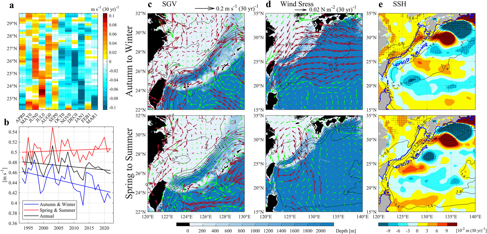
图 1 | 黑潮流速、风强迫和 SSH 的季节性变化趋势。
Fig. 1 | Seasonal trends in the Kuroshio velocity, wind forcing, and SSH.
a 过去三十年从台湾以东到东海、沿黑潮流向坐标各断面的断面 SGV 月别变化趋势（补充图 1）。
a Monthly trends in cross-sectional SGV on sections along the stream coordinate of the Kuroshio from the ETW to ECS over the past three decades (Supplementary Fig. 1).
第 0 年月份（第 1 年月份）使用 1993—2022 年（1994—2023 年）的数据。
Data from 1993–2022 (1994–2023) are used for month 0 (month 1).
b 沿流向坐标平均的 SGV 时间序列。
b Time series of SGV averaged along the stream coordinate.
蓝色表示秋冬季（OCT0–MAR1），红色表示春夏季（APR0–SEP0），黑色表示全年平均（APR0–MAR1）。
Blue denotes autumn–winter (OCT0–MAR1), red denotes spring–summer (APR0–SEP0), and black denotes the annual mean (APR0–MAR1).
它们与时间的线性关系分别为 y = −1.4 × 10⁻³x + 3.28（p < 0.1；蓝色）、y = 2 × 10⁻⁴x + 0.02（p > 0.1；红色）和 y = −6 × 10⁻⁴x + 1.65（p < 0.1；黑色）。
Their linear relations with time are y = −1.4 × 10⁻³x + 3.28 (p < 0.1; blue), y = 2 × 10⁻⁴x + 0.02 (p > 0.1; red) and y = −6 × 10⁻⁴x + 1.65 (p < 0.1; black).
c 秋冬季（上面板）和春夏季（下面板）平均 SGV 的变化趋势。
c Trends in SGV averaged for autumn–winter (upper panel) and spring–summer (lower panel).
在 90% 置信水平下显著（不显著）的矢量用红色（绿色）表示。
Vectors significant (insignificant) at the 90% confidence level are shown in red (green).
黑色等值线表示相应季节的气候态平均 SSH。
Black contours indicate the climatological mean SSH for the corresponding season.
d 与 (c) 相同，但表示风应力。
d Same as (c), but for wind stress.
e 秋冬季（上面板）和春夏季（下面板）平均 SSH 的变化趋势。
e Trends in SSH averaged for autumn–winter (upper panel) and spring–summer (lower panel).
点描区域表示趋势超过 90% 置信水平的区域。
Stippled areas indicate regions where trends exceed the 90% confidence level.
黑色等值线表示相应季节的气候态平均 SSH，蓝线表示 200 m 等深线。
Black contours show the climatological mean SSH for the corresponding season, and the 200-m isobath is indicated by the blue line.
数据分析和可视化使用 MATLAB（R2024b）完成。
Data analysis and visualization were performed using MATLAB (R2024b).
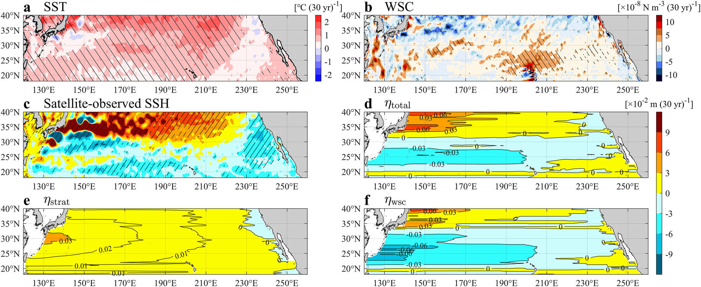
图 2 | 过去三十年与斜压罗斯贝波相关的表面场和海平面变化趋势。
Fig. 2 | Trends in surface fields and sea level associated with baroclinic Rossby waves over the past three decades.
由全年平均数据得到的 a SST、b WSC 和 c SSH 的变化趋势。
Trends in a SST, b WSC, and c SSH, derived from annual-mean data.
斜线填充区域表示趋势在 90% 置信水平下显著的区域。
Hatched areas indicate regions where trends are significant at the 90% confidence level.
d–f 使用斜压罗斯贝波模型（“方法”中的式 3）诊断得到的 SSH 变化趋势。
d–f Trends in SSH diagnosed using a baroclinic Rossby wave model (Eq. 3 in “Methods”).
d 由 e 海洋层结和 f WSC 的变化趋势共同作用产生的总 SSH 变化趋势，即 ηtotal = ηstrat + ηwsc。
d Total SSH trend arising from the combined effects of trends in e oceanic stratification and f WSC, such that ηtotal = ηstrat + ηwsc.
数据分析和可视化使用 MATLAB（R2024b）完成。
Data analysis and visualization were performed using MATLAB (R2024b).
这种滞后响应并不锁定于特定季节，因此难以解释观测到的黑潮变化趋势的显著季节性。
Such a lagged response is not seasonally locked and therefore cannot readily account for the pronounced seasonality observed in the Kuroshio trend.
海盆尺度风强迫和海洋层结的影响
Effects of basin-scale wind forcing and ocean stratification
许多研究认为，副热带环流的变化可在调节黑潮对气候变化的响应中发挥主导作用[23–29,32–34,53,54]。
Many studies have suggested that changes in subtropical gyres can play a dominant role in regulating the Kuroshio response to climate change[23–29,32–34,53,54].
然而，如上文所述，这种远程响应不太可能是观测到的黑潮变化趋势季节性的主要驱动因素。
However, such a remote response is unlikely to be the primary driver of the observed seasonality of the Kuroshio trend, as discussed above.
图 2a 显示，过去三十年北太平洋副热带地区的海表温度（SST）显著上升了 0.5—1 °C，意味着上层海洋层结增强，而这倾向于使副热带环流加速[26,27,33]。
Figure 2a shows that sea surface temperature (SST) over the subtropical North Pacific has increased significantly by 0.5–1 °C over the past three decades, implying enhanced upper-ocean stratification, which tends to accelerate the subtropical gyre[26,27,33].
相比之下，同一区域的风应力旋度（WSC）主要呈正趋势（图 2b），意味着风强迫的减弱可能使副热带环流减速[53,54]。
In contrast, the wind stress curl (WSC) exhibits predominantly positive trends over the same region (Fig. 2b), implying that weakening of the wind forcing may decelerate the subtropical gyre[53,54].
这些相反的效应表明，层结驱动的黑潮加速和风驱动的黑潮减速可能部分相互抵消，因此有必要定量评估它们各自的贡献。
These opposing effects suggest that stratification-driven acceleration and wind-driven deceleration of the Kuroshio may partially offset each other, therefore motivating a quantitative assessment of their relative contributions.
为诊断层结和 WSC 对 SSH 的影响，我们采用了线性化的斜压罗斯贝波模型（方法中的式 1—3）。
To diagnose the effects of stratification and WSC on SSH, we apply a linearized baroclinic Rossby wave model (Eqs. 1–3 in Methods).
由于东边界的变化趋势与全球平均 SSH 的变化趋势十分接近，其贡献被忽略（补充图 4）。
The eastern boundary contribution is neglected because its trend closely follows the global-mean SSH trend (Supplementary Fig. 4).
该模型成功再现了观测到的 SSH 变化趋势的经向结构，其特征是在 20—32°N 之间总体下降，而在 32—40°N 之间上升（图 2c、d）。
The model successfully reproduces the observed meridional structure of SSH trends, characterized by an overall decrease between 20–32°N and an increase between 32–40°N (Fig. 2c, d).
然而，模型未能捕捉到观测中西边界附近 SSH 变化趋势的纬向带状结构，导致部分区域 SSH 趋势的幅度和空间分布均与观测不匹配。
However, the model fails to capture the observed zonally banded structure of SSH trends near the western boundary, resulting in mismatches in both the magnitude and pattern of SSH trends over some regions.
正如 Qiu 等人[55]所指出的，这些差异很可能归因于持续全球变暖背景下中尺度涡活动的变化。
As suggested by Qiu et al.[55], such discrepancies are likely attributable to changes in mesoscale eddy activity under ongoing global warming.
鉴于涡活动在塑造黑潮变化趋势季节性中的作用有限（图 1e），我们更关注层结和 WSC 的影响。
Given the limited role of eddy activity in shaping the seasonality of the Kuroshio trend (Fig. 1e), we focus more on the effects of stratification and WSC.
北太平洋副热带地区平均的约化重力 g′（见“方法”中的式 4）相对于其气候态平均值（0.02 m s⁻²）显著增加了约 6%，表明上下层之间的层结增强了。
The reduced gravity g′ (see Eq. 4 in “Methods”), averaged over the subtropical North Pacific, has increased significantly by approximately 6% relative to its climatological mean (0.02 m s⁻²), indicating that the stratification between the upper and lower layers has been enhanced.
根据式 (3)，增强的层结使副热带环流西部的 SSH 上升约 2—3 cm（图 2e），这与 Chen 等人[28]的数值实验一致；在这些实验中，SST 上升 1 °C 产生了幅度相当的 SSH 上升。
According to Eq. (3), the enhanced stratification leads to an SSH increase of about 2–3 cm over the western part of the subtropical gyre (Fig. 2e), consistent with the numerical experiments of Chen et al.[28], in which a 1 °C SST increase produced a comparable SSH rise.
因此，与 g′ 增大相关的层结所引起的 SSH 上升（图 2e），抵消了 WSC 正趋势驱动的 SSH 下降（图 2f），使副热带环流西部的 SSH 负趋势幅度减弱、统计显著性降低（图 2c、d）。
Consequently, the stratification-induced SSH increase associated with intensified g′ (Fig. 2e) offsets the SSH decrease driven by the positive WSC trend (Fig. 2f), resulting in a weakened and statistically less significant negative SSH trend over the western subtropical gyre (Fig. 2c, d).
鉴于全年黑潮 SGV 显著减弱（图 1b），这些结果表明，远程风强迫对过去三十年黑潮的长期背景减弱有所贡献，而其季节性不对称可能与东亚季风相关的局地风强迫有关。
Given the significant weakening of the annual Kuroshio SGV (Fig. 1b), these results suggest that remote wind forcing contributes to the long-term background weakening of the Kuroshio over the past three decades, while the seasonal asymmetry is potentially linked to local wind forcing associated with the East Asian monsoon.
黑潮变化趋势的垂向结构和动力分解
Vertical structure and dynamical decomposition of the Kuroshio trends
图 3a、b 展示了由 JCOPE2M 和 GLORYS 两个高分辨率（1/12°）海洋再分析数据集得到的、过去 30 年黑潮周边秋冬季和春夏季上层流速的变化趋势。
Figure 3a, b show the trends in upper-layer velocity around the Kuroshio for autumn–winter and spring–summer over the past 30 years, derived from two high-resolution (1/12°) ocean reanalysis datasets, JCOPE2M and GLORYS.
两个数据集均表明，秋冬季黑潮显著减弱，而春夏季未见明显趋势，这与卫星观测一致（图 1c）。
Both datasets indicate a significant weakening of the Kuroshio during autumn–winter, while no pronounced trend is evident during spring–summer, which is consistent with satellite observations (Fig. 1c).
JCOPE2M 中出现了一个例外：该数据集还显示，台湾以东的黑潮在春夏季也有所减弱。
An exception is found in JCOPE2M, which also shows a weakening of the ETW–Kuroshio during spring–summer.
此外，值得注意的是，再分析数据表明，作为对马暖流源区的陆架[56]上流速增强，且秋冬季的增强幅度大于春夏季。
Furthermore, it is noteworthy that the reanalysis data show enhanced velocity over the continental shelf, the source region of the Tsushima Warm Current[56], with a larger magnitude in autumn–winter than in spring–summer.
图 3c、d 分别基于 JCOPE2M 和 GLORYS，展示了秋冬季东海某一断面上断面流速、温度和密度变化趋势的垂向分布。
Figure 3c, d shows the vertical distributions of trends in cross-sectional velocity, temperature, and density across a section in the ECS during autumn–winter, based on JCOPE2M and GLORYS, respectively.
两个数据集均表明，黑潮沿其主流明显减弱，这一减弱向下延伸至约 1000 m 深度。
Both datasets indicate a pronounced weakening of the Kuroshio along its mainstream, extending down to approximately 1000 m depth.
相比之下，陆架上的流速增强表明黑潮向岸侧位移。
In contrast, a strengthening of velocity over the continental shelf suggests an onshore displacement of the Kuroshio.
在次表层，沿陆坡的黑潮西侧温度升高幅度大于其东侧，导致相应的密度降低和斜压性减弱。
In the subsurface layer, temperature has increased more on the western flank of the Kuroshio along the continental slope than on its eastern side, resulting in a corresponding reduction in density and a weakening of baroclinicity.
这些特征表明，斜压性的降低很可能对秋冬季黑潮的减弱有所贡献。
These features suggest that the reduction in baroclinicity has likely contributed to the weakening of the Kuroshio during autumn–winter.
在等密度坐标下计算的温度变化趋势进一步表明，平流过程在增暖中仅起次要作用（补充图 5a），这意味着温跃层的垂向位移——即一种动力过程——是观测到的秋冬季黑潮减弱的主要原因。
Temperature trends computed on isopycnal coordinates further indicate that advective processes play only a minor role in the warming (Supplementary Fig. 5a), implying that vertical displacement of the thermocline—namely, a dynamical process—is primarily responsible for the observed Kuroshio weakening in autumn–winter.
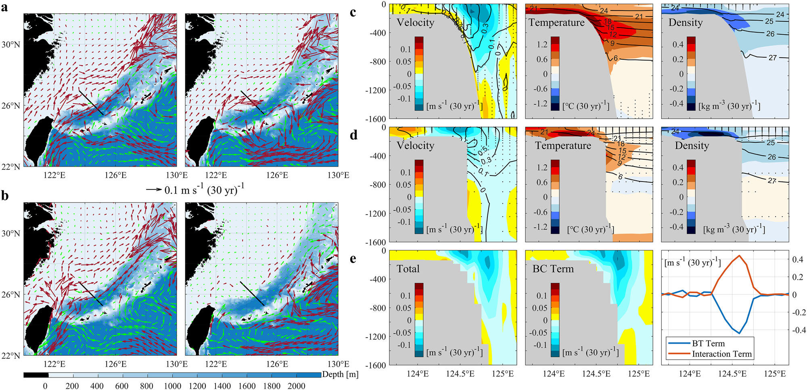
图3｜基于两套再分析数据集得到的过去三十年黑潮的季节性趋势及其垂向结构。
Fig. 3 | Seasonal trends and their vertical structures of the Kuroshio over the past three decades, derived from two reanalysis datasets.
由a JCOPE2M（上层：0–500 m）和b GLORYS（上层：0–454 m）得到的秋冬季（左侧各图）和春夏季（右侧各图）上层平均流速趋势。
Trends in upper-layer–averaged velocity for autumn–winter (left panels) and spring–summer (right panels), derived from a JCOPE2M (upper layer: 0–500 m) and b GLORYS (upper layer: 0–454 m).
在90%置信水平上显著（不显著）的矢量以红色（绿色）表示。
Vectors significant (insignificant) at the 90% confidence level are shown in red (green).
注意，在水深小于所设定的上层底界深度的区域，矢量表示全水深平均流速的趋势。
Note that, in regions where the depth is shallower than the prescribed upper-layer bottom, the vectors represent trends in depth-averaged velocity.
基于c JCOPE2M和d GLORYS得到的秋冬季断面流速（左）、温度（中）和密度（右；σt）趋势的垂向结构；断面位置标示于a、b中。
Vertical structures of the trends in cross-sectional velocity (left), temperature (middle), and density (right; σt) during autumn–winter, based on c JCOPE2M and d GLORYS; the cross-section location is indicated in a, b.
点状阴影表示趋势在90%置信水平上不显著的区域。
Stippled areas indicate regions where trends are insignificant at the 90% confidence level.
等值线表示相应变量的气候态平均值。
Contours denote the climatological mean for the corresponding variables.
e 使用JCOPE2M，依据“方法”中的式（8），对秋冬季断面地转流速进行分解。
e Decomposition of the cross-sectional geostrophic velocity for autumn–winter based on Eq. (8) in “Methods” using JCOPE2M.
总项（左）等于斜压项（中）、正压项（右）和底层海水密度–地形相互作用项（右）之和。
The total term (left) equals the sum of the baroclinic (middle), barotropic (right), and bottom-density–topography interaction (right) terms.
数据分析和可视化使用MATLAB（R2024b）完成。
Data analysis and visualization were performed using MATLAB (R2024b).
依据“方法”中的式（8）估算的地转流速趋势较好地再现了观测到的黑潮流速趋势的垂向分布（图3e，左图）。
The trend in geostrophic velocity estimated from Eq.(8) in “Methods” well reproduces the observed vertical distribution of Kuroshio velocity trends (Fig. 3e, left panel).
分解结果表明，与上述讨论一致，黑潮减弱及其向近岸侧位移在很大程度上可归因于斜压项的变化（图3e，中图）。
The decomposition indicates that, consistent with the above discussion, the weakening of the Kuroshio together with its onshore displacement can be largely attributed to changes in the baroclinic term (Fig. 3e, middle panel).
值得注意的是，底层海水密度–地形相互作用项所表征的陆坡沿线底层海水增温使黑潮流速增加最多0.4 m s⁻¹（图3e，右图），远大于斜压性变化的贡献。
Notably, bottom warming along the continental slope, represented by the bottom-density–topography interaction term, acts to strengthen the Kuroshio by up to 0.4 m s⁻¹ (Fig. 3e, right panel), which is much larger than the contribution from changes in baroclinicity.
然而，这种增强作用几乎被正压项完全抵消（图3e，右图）。
However, this strengthening effect is nearly completely offset by the barotropic term (Fig. 3e, right panel).
与比容海平面（ηs）和海洋质量（ηm）相关的海表高度（SSH）趋势显示，ηs主要在深海区域上升，而ηm在陆架和岛屿周边等浅水区域上升、在深海区域下降（补充图6a−c）。
The trends in SSH associated with steric sea level (ηs) and ocean mass (ηm) show that ηs increases predominantly over the deep ocean, whereas ηm increases over shallow regions, such as the continental shelf and areas surrounding islands, and decreases over the deep sea (Supplementary Fig. 6a−c).
这一分布格局提示水体质量从深海向浅水区域重新分配。
This pattern suggests a redistribution of water mass from the deep ocean toward shallow regions.
与这一解释一致，Chen等[57]展示了对全球变暖相关热比容海平面上升的一种动力响应：北太平洋西部的热膨胀将海水推向东海（ECS）陆架，增加陆架水体质量，并显著减弱陆坡沿线的SSH梯度。
Consistent with this interpretation, Chen et al.[57] demonstrated a dynamical response to thermosteric sea level rise associated with global warming, in which thermal expansion over the western North Pacific pushes water onto the ECS continental shelf, increasing shelf water mass and substantially weakening the SSH gradient along the continental slope.
在这一机制的基础上，本研究结果进一步提示，陆坡沿线底层海水增温引起的SSH上升无法由地转调整充分平衡，从而促进海水向近岸侧输送、减弱与ηs相关的陡峭SSH梯度，并对观测到的黑潮趋势作出有限贡献。
Building on this mechanism, the present results further suggest that SSH rise induced by bottom warming along the continental slope cannot be fully balanced by geostrophic adjustment, thereby promoting onshore water transport, weakening the sharp SSH gradients related to ηs, and contributing modestly to the observed Kuroshio trend.
相比之下，正压SSH锋面（补充图6c）很可能导致陆架上的流速增强（图3a、b，左侧各图）。
In contrast, the barotropic SSH front (Supplementary Fig. 6c) likely results in the enhanced velocity over the continental shelf (Fig. 3a, b, left panels).
春夏季，黑潮离岸侧的流速略有下降，且在统计上不显著（补充图7a、b，左侧各图）。
In spring–summer, the offshore Kuroshio flank exhibits a weak and statistically insignificant reduction in velocity (Supplementary Fig. 7a, b, left panels).
相比之下，陆坡上的流速增强表明黑潮向近岸侧位移。
In contrast, velocity intensification over the continental slope indicates an onshore displacement of the Kuroshio.
与秋冬季一样，流速趋势的垂向结构主要受斜压项控制，而底层海水密度–地形相互作用项和正压项在很大程度上相互抵消（补充图7c）。
As in autumn–winter, the vertical structure of the velocity trends is primarily governed by the baroclinic term, while the bottom-density–topography interaction and barotropic terms largely offset each other (Supplementary Fig. 7c).
温度和密度趋势显示，陆架和陆坡上方海水的增温远弱于深海区域海水，因此斜压性增强，有利于黑潮向近岸侧移动（补充图7a、b，中间和右侧各图）。
Temperature and density trends show that waters over the continental shelf and slope have experienced much weaker warming than those over the deep ocean, leading to an enhancement in baroclinicity that favors an onshore shift of the Kuroshio (Supplementary Fig. 7a, b, middle and right panels).
在等密度面上计算的温度趋势再次显示平流过程仅作出较小贡献（补充图5b），证实动力过程在所有季节均占主导。
Temperature trends computed on isopycnal surfaces again reveal only a minor contribution from advective processes (Supplementary Fig. 5b), confirming the dominance of dynamical processes across all seasons.
最后，春夏季陆架上的流速增强（图3a、b，右侧各图）也可在很大程度上归因于正压SSH锋面（补充图6f）。
Finally, the enhanced velocity over the continental shelf during spring–summer (Fig. 3a, b, right panels) can also be largely attributed to the barotropic SSH front (Supplementary Fig. 6f).
局地风强迫的影响
Effects of the local wind forcing
鉴于过去三十年与东亚冬季风（EAWM）相关的风应力在东海显著增强（图1d），有必要考察局地风强迫对黑潮秋冬季减弱趋势的贡献。
Given that wind stress associated with the East Asian winter monsoon (EAWM) has significantly intensified over the ECS during the past three decades (Fig. 1d), it is reasonable to examine the contribution of local wind forcing to the weakening trend of the Kuroshio in autumn–winter.
先前研究[43–46]及“方法”中的式（9）表明，除了与风应力旋度（WSC）相关的常规埃克曼抽吸（weWSC）之外，非线性埃克曼抽吸（weNEK）和相对风效应（weRW）引起的垂向运动也可能因强烈的表层涡度而在强射流上十分明显。
Previous studies[43–46] and Eq. (9) in “Methods” indicate that, in addition to the conventional Ekman pumping associated with WSC (weWSC), vertical motions induced by nonlinear Ekman pumping (weNEK) and the relative-wind effect (weRW) can be pronounced over strong jet currents owing to strong surface vorticity.
图4a−c显示，秋冬季黑潮区域weNEK和weRW的趋势比weWSC的趋势具有更高的相位一致性。
Figure 4a−c shows that the trends in weNEK and weRW exhibit greater phase coherence over the Kuroshio region during autumn–winter than those in weWSC.
此外，在整个黑潮区域，weNEK和weRW在统计上均比weWSC更显著。
In addition, both weNEK and weRW are statistically more significant than weWSC across the Kuroshio region.
而且，与weNEK相关的垂向运动趋势的幅度显著超过与weRW相关的幅度，这意味着非线性埃克曼抽吸在调节黑潮趋势中起主导作用。
Moreover, the magnitude of the vertical motion trend associated with weNEK substantially exceeds that associated with weRW, implying that nonlinear Ekman pumping plays a dominant role in modulating the Kuroshio trend.
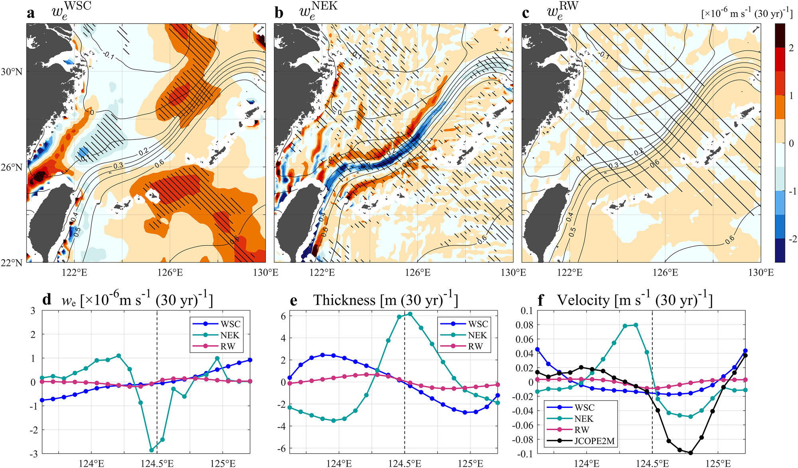
图4｜过去三十年秋冬季埃克曼抽吸引起的垂向速度及其对黑潮的影响。
Fig. 4 | Ekman-pumping-induced vertical velocity and its impact on the Kuroshio in autumn–winter over the past three decades.
依据“方法”中的式（10）计算的、由局地风强迫通过a 与WSC相关的埃克曼抽吸（weWSC）、b 非线性埃克曼抽吸（weNEK）和c 相对风埃克曼抽吸（weRW）引起的秋冬季垂向速度趋势。
Trends in vertical velocity during autumn–winter induced by local wind forcing through a WSC–related Ekman pumping (weWSC), b nonlinear Ekman pumping (weNEK), and c relative-wind Ekman pumping (weRW), calculated from Eq. (10) in “Methods”.
等值线表示由JCOPE2M得到的秋冬季气候态平均SSH。
Contours denote the climatological mean SSH during autumn–winter derived from JCOPE2M.
斜线阴影表示趋势超过90%置信水平的区域。
Hatched areas indicate regions where trends exceed the 90% confidence level.
d 图3a所示断面上秋冬季weWSC、weNEK和weRW的趋势。
d Trends in weWSC, weNEK and weRW during autumn–winter on the section shown in Fig. 3a.
e 依据“方法”中的式（12）估算的上层厚度对（d）中所示埃克曼抽吸趋势的响应。
e Responses of upper-layer thickness to the Ekman pumping trends shown in (d), estimated from Eq. (12) in “Methods”.
f 同（e），但表示依据“方法”中的式（13）得到的上层流速。
f Same as (e), but for upper-layer velocity based on Eq. (13) in “Methods”.
黑线表示由JCOPE2M得到的秋冬季上层平均（0–500 m）流速趋势（图3c，左图）；注意，在水深不足500 m的区域，黑线表示全水深平均流速的趋势。
The black line denotes trends in upper-layer–averaged (0–500 m) velocity for autumn–winter derived from JCOPE2M (Fig. 3c, left panel); note that, in regions where the depth is shallower than the 500 m, the black line represents trends in depth-averaged velocity.
（d–f）中的虚线表示黑潮轴线，其定义为平均流速最大值所在的位置。
Dashed lines in (d–f) denote the Kuroshio axis, defined as the location of maximum mean velocity.
数据分析和可视化使用MATLAB（R2024b）完成。
Data analysis and visualization were performed using MATLAB (R2024b).
图4b表明，在weNEK的框架下，与黑潮流向相反的风增强会在黑潮核心引起下沉，并在两侧引起上升。
Figure 4b illustrates that strengthening counter-Kuroshio winds induce downwelling over the Kuroshio core and upwelling along its flanks within the framework of weNEK.
这一格局的产生是因为，气候态表层流速的二阶导数∂²ū/∂y²和∂²v̄/∂x²与表层地转流速（SGV）的水平结构相关，在射流核心为负，而沿其侧向边界为正（“方法”中的式10）。
This pattern arises because the second derivatives of climatological surface velocities, ∂²ū/∂y² and ∂²v̄/∂x², which are related to the horizontal SGV structure, are negative over the jet core and positive along its lateral boundaries (Eq. 10 in “Methods”).
值得注意的是，图4b中的垂向运动格局在相位上与Zhang等[46]的数值试验一致，其图8展示了在风向与洋流流向一致时黑潮的类似响应。
Notably, the vertical motion pattern in Fig. 4b is consistent in phase with the numerical experiments of Zhang et al. [46], whose Fig. 8 shows a similar response of the Kuroshio under winds aligned with the current.
相比之下，图4c显示，随着风速增大，weRW在黑潮近岸侧引起下沉、在离岸侧引起上升。
In contrast, Fig. 4c shows that, under increasing wind speed, weRW induces downwelling on the onshore flank and upwelling on the offshore flank of the Kuroshio.
这种不对称响应与表层涡度ζ的符号有关：黑潮近岸侧为正，离岸侧为负（“方法”中的式10）。
This asymmetric response is related to the sign of surface vorticity ζ, which is positive on the onshore side and negative on the offshore side of the Kuroshio (Eq. 10 in “Methods”).
这些垂向运动的动力学后果通过线性化的1.5层模型进行考察，其中式（12）和参考文献13描述了断面上上层厚度和流速对埃克曼抽吸的响应。
The dynamical consequences of these vertical motions are examined using a linearized 1.5-layer model, in which Eq. (12) and ref. 13 describe the responses of upper-layer thickness and velocity to Ekman pumping along a cross section.
埃克曼抽吸引起的流速可表示上层（0–500 m）垂向平均流速的变化，这隐含地假设有效斜压层延伸至与500 m相当的深度。
The Ekman-pumping–induced velocity can represent vertically averaged velocity changes over the upper-layer (0–500 m), implicitly assuming that the effective baroclinic layer extends to depths comparable to 500 m.
注意，线性化模型及其解析解是在水深大于上层厚度的假设下推导的；因此，对更浅区域的结果应谨慎解释。
Note that the linearized model and its analytical solutions are derived under the assumption that the water depth exceeds the upper-layer thickness; therefore, the results over shallower regions should be interpreted with caution.
图4d展示了图3a所示断面上weWSC、weNEK和weRW的趋势。
Figure 4d shows the trends of weWSC, weNEK and weRW along the section shown in Fig. 3a.
相应地，图4e显示，weNEK使上层加深，表明黑潮上方温跃层向下位移。
Correspondingly, Fig. 4e shows that weNEK deepens the upper layer, indicating a downward displacement of the thermocline over the Kuroshio.
这种温跃层加深可能有助于陆坡沿线观测到的次表层增温增强，尤其是近底部的增温，如图3c、d所示。
Such a thermocline deepening may contribute to the enhanced subsurface warming observed along the continental slope, particularly near the bottom, as shown in Fig. 3c, d.
过去三十年，weNEK使离岸侧流速降低最多0.05 m s⁻¹，同时使近岸侧流速增加最多0.08 m s⁻¹（图4f）。
weNEK weakens the offshore velocity by up to 0.05 m s⁻¹, while strengthening the onshore velocity by up to 0.08 m s⁻¹ over the past three decades (Fig. 4f).
相比之下，weWSC和weRW都使离岸侧（近岸侧）的上层变浅（加深）（图4e），导致黑潮略有减弱，其幅度显著小于weNEK的贡献（图4f）。
In comparison, both weWSC and weRW act to shoal (deepen) the upper layer over the offshore (onshore) flank (Fig. 4e), leading to a modest weakening of the Kuroshio that is substantially smaller than the contribution from weNEK (Fig. 4f).
在水深大于上层厚度的黑潮离岸侧，局地风强迫驱动的流速趋势的定量估算与JCOPE2M得到的趋势高度一致（图4f）。
On the offshore side of the Kuroshio, where the water depth exceeds the upper-layer thickness, the quantitatively estimated velocity trends driven by local wind forcing are highly consistent with those derived from JCOPE2M (Fig. 4f).
具体而言，weNEK约占离岸侧平均减弱量的53%，而weWSC和weRW分别约占17%和3%。
Specifically, weNEK accounts for approximately 53% of the offshore-averaged weakening, while weWSC and weRW account for about 17% and 3%, respectively.
这些结果提示，局地风驱动过程，尤其是非线性埃克曼抽吸，在黑潮区域离岸侧上层流速降低中起主要作用。
These results suggest that local wind-driven processes, particularly nonlinear Ekman pumping, play a primary role in the offshore reduction of upper-layer velocity over the Kuroshio region.
如上所述，剩余部分很可能归因于北太平洋副热带环流的大尺度调整（图2d）。
The remaining fraction is likely attributable to the large-scale adjustment of the North Pacific subtropical gyre (Fig. 2d), as discussed above.
相比之下，在黑潮近岸侧，模型模拟的流速对weNEK的响应显著超过JCOPE2M得到的趋势（图4f）。
In contrast, on the onshore side of the Kuroshio, the modeled velocity response to weNEK substantially exceeds the trend derived from JCOPE2M (Fig. 4f).
这一差异可归因于近岸侧水深相对较浅，通常为100–300 m。
The discrepancy is attributable to the fact that the water depth on the onshore side is relatively shallow, typically ranging from 100 to 300 m.
因此，对于真实海洋中的黑潮近岸区域，图4f估算的流速响应被高估，应谨慎解释。
As a result, the velocity response estimated in Fig. 4f is overestimated and should be interpreted with caution for the Kuroshio onshore region in the real ocean.
秋冬季，表层冷却以及与强东亚冬季风相关的垂向混合增强，使浅水陆架区域的层结显著减弱[58]。
During autumn–winter, stratification over the shallow shelf region is substantially weakened due to surface cooling and enhanced vertical mixing associated with the strong EAWM[58].
这些条件抑制斜压剪切，并有利于黑潮近岸侧呈现以正压为主的响应。
Such conditions suppress baroclinic shear and favor a predominantly barotropic response over the Kuroshio onshore flank.
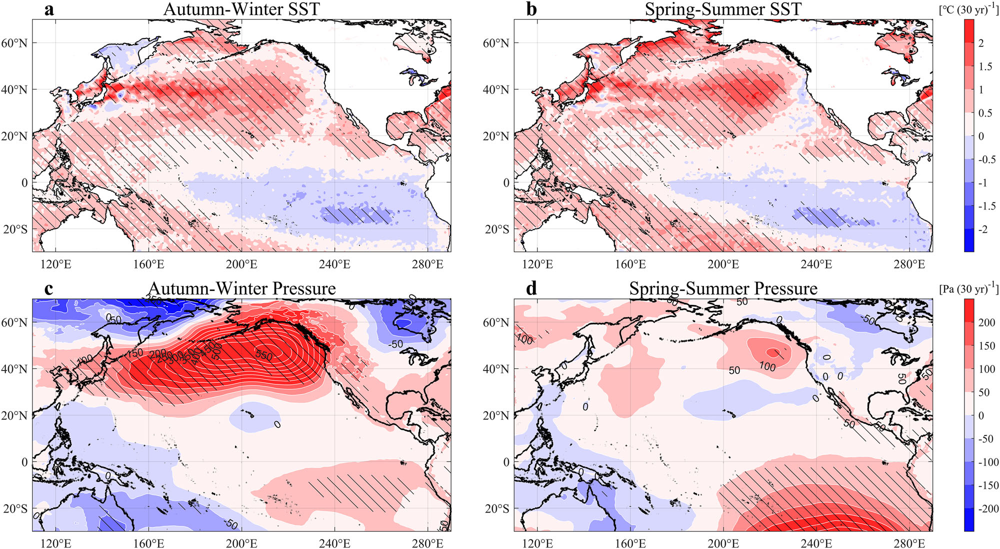
图5｜过去三十年的大尺度大气变化。
Fig. 5 | Large-scale atmospheric changes over the past three decades.
a 秋冬季和b 春夏季的SST趋势。
Trends in SST for a autumn–winter and b spring–summer.
c、d 同（a、b），但表示SLP。
c, d Same as (a, b) but for SLP.
斜线阴影表示趋势超过90%置信水平的区域。
Hatched areas indicate regions where trends exceed the 90% confidence level.
数据分析和可视化使用MATLAB（R2024b）完成。
Data analysis and visualization were performed using MATLAB (R2024b).
在这种情形下，与黑潮特征长度尺度（L ≈ 20 km）相当的斜压罗斯贝变形半径（Re ≈ 50 km）不同，正压罗斯贝变形半径（Rebt）为500 km量级，远大于L。
In this regime, unlike the baroclinic Rossby deformation radius (Re ≈ 50 km), which is comparable to the characteristic length scale of the Kuroshio (L ≈ 20 km), the barotropic Rossby deformation radius (Rebt) is on the order of 500 km, far exceeding L.
在这些情况下，这种幅度的直接线性地转响应将超出近岸尺度上地转平衡所允许的范围，表明必须存在额外的动力调整过程。
Under these circumstances, a direct linear geostrophic response of this magnitude would exceed the range permitted by geostrophic balance at the onshore scale, indicating that additional dynamical adjustment processes must operate.
这类调整很可能涉及重力波介导的质量重新分配，从而使陆架海平面上升、恢复地转平衡，并重建异常再循环环流，在水平方向上补偿黑潮流动的减弱。
Such adjustments likely involve gravity wave–mediated mass redistribution, leading to sea level rise over the continental shelf, restoring geostrophic balance, and reconstructing anomalous recirculation gyres that compensate for the Kuroshio’s reduced flow horizontally.
此外，陆坡沿线的正SSH异常向岸延伸至陆架上（图1e，上图；补充图6a、c）；这种延伸的空间尺度与Rebt相当，为所提出的正压调整提供支持。
Moreover, positive SSH anomalies along the continental slope extend shoreward over the continental shelf (Fig. 1e, upper panel, and Supplementary Fig. 6a, c); the spatial scale of this extension is comparable to Rebt, supporting the proposed barotropic adjustment.
不过，尽管1.5层模型在浅水区域存在局限性，图4f确实反映出weNEK可能有助于黑潮近岸侧的增强，这与Nakamura等[43]提出的机制一致。
Nevertheless, despite the limitations of the 1.5-layer model in shallow regions, Fig. 4f indeed reflects that weNEK may contribute to the intensification of the Kuroshio on its onshore side, consistent with the mechanism proposed by Nakamura et al.[43].
春夏季，黑潮沿其主流未呈现一致的趋势（图1a、b）。
In spring–summer, the Kuroshio does not exhibit a coherent trend along its main stream (Fig. 1a, b).
北太平洋内部WSC激发的负SSH趋势倾向于使黑潮减弱（图2c、d）。
The negative SSH trends excited by the North Pacific interior WSC tend to weaken the Kuroshio (Fig. 2c, d).
相比之下，在黑潮以西的陆架上观测到明显的weWSC正趋势（补充图8a）。
In contrast, a pronounced positive trend in weWSC is observed over the continental shelf west of the Kuroshio (Supplementary Fig. 8a).
这种局地强迫通过降低黑潮西侧的SSH而使黑潮增强。
This localized forcing acts to strengthen the Kuroshio by depressing SSH on its western flank.
weWSC的动力效应还表现为陆架上的次表层冷却（补充图7a，中图），这与上升流增强一致。
The dynamical effect of weWSC is further reflected by subsurface cooling on the continental shelf (Supplementary Fig. 7a, middle panel), consistent with enhanced upwelling.
weNEK在黑潮中央轴线上呈正趋势，在两侧呈负趋势，尤其是在东海黑潮的下游（补充图8b）。
The weNEK exhibits a positive trend over the central axis of the Kuroshio and negative trends on both flanks, particularly downstream of the ECS-Kuroshio (Supplementary Fig. 8b).
这一空间格局提示，weNEK在春夏季倾向于使黑潮增强。
This spatial pattern suggests that weNEK tends to strengthen the Kuroshio in spring–summer.
相比之下，weRW的贡献仍然较弱，很可能仅起次要作用（补充图8c）。
In comparison, the contribution from weRW remains weak and likely plays a minor role (Supplementary Fig. 8c).
综合来看，这些结果意味着，局限于西边界区域的气旋式风应力趋势（图1d，下图）抵消了北太平洋内部WSC引起的减弱，使春夏季黑潮未呈现一致的趋势。
Taken together, these results imply that the cyclonic wind stress trend localized over the western boundary (Fig. 1d, bottom panel) counteracts the weakening induced by the North Pacific interior WSC, leading to the absence of a coherent Kuroshio trend during spring–summer.
与东亚冬季风相关的风应力增强的可能机制
Possible mechanisms for the enhanced wind stress related to the EAWM
厄尔尼诺–南方涛动（ENSO）在年际时间尺度上对东亚冬季风的调节起关键作用。
The El Niño–Southern Oscillation (ENSO) plays a crucial role in modulating the EAWM on interannual timescales.
虽然ENSO主要作为东亚冬季风的外部强迫，但东亚冬季风也可通过调节西太平洋的热带对流来影响ENSO[59]。
While ENSO primarily acts as an external forcing on the EAWM, the EAWM can also exert influence on ENSO by modulating tropical convection over the western Pacific[59].
一般而言，拉尼娜（厄尔尼诺）状态有利于东亚冬季风增强（减弱）。
In general, La Niña (El Niño) conditions favor a strengthened (weakened) EAWM.
ENSO对东亚冬季风的影响主要通过太平洋–东亚遥相关实现[60]。
The ENSO influence on the EAWM is mainly mediated through the Pacific–East Asian teleconnection[60].
拉尼娜事件期间，赤道太平洋中东部对流受抑制、西太平洋对流增强，二者引起北太平洋上的异常罗斯贝波响应，进而在北太平洋西部形成异常气旋。
During La Niña events, suppressed convection over the central–eastern equatorial Pacific and enhanced convection over the western Pacific induce the anomalous Rossby wave responses over the North Pacific, leading to an anomalous cyclone over the western North Pacific.
沿异常气旋西侧出现的相关异常向南风增强东亚冬季风。
The associated anomalous southward winds along the western flank of the anomalous cyclone strengthen the EAWM.
相反，厄尔尼诺事件引起相反的环流异常，导致东亚冬季风减弱。
Conversely, El Niño events induce opposite circulation anomalies, resulting in a weakened EAWM.
过去三十年，SST呈现持续的类拉尼娜趋势，季节依赖性很小（图5a、b）。
SST exhibits a persistent La Niña–like trend over the past three decades, with little seasonal dependence (Fig. 5a, b).
越来越多的研究指出，全球变暖倾向于将热带太平洋的平均态调节为更接近拉尼娜的状态，同时多年拉尼娜事件的持续性增强、发生次数增加[61–63]。
A growing body of studies points out that global warming tends to modulate the tropical Pacific mean state toward more La Niña–like conditions, accompanied by enhanced persistence and increased occurrence of multiyear La Niña events[61–63].
这种类拉尼娜背景态与北半球秋冬季热带太平洋西部海平面气压（SLP）降低的倾向有关，尽管该负气压趋势在统计上不显著（图5c）。
Such a La Niña–like background state is associated with a tendency toward lower sea level pressure (SLP) over the western tropical Pacific during the boreal autumn–winter season, although the negative pressure trend is not statistically significant (Fig. 5c).
不过，这些环流变化倾向仍可能为东亚冬季风增强提供有利条件，而东亚冬季风增强可促使黑潮减弱。
These circulation tendencies may nevertheless provide favorable conditions for the intensification of the EAWM, which can contribute to the Kuroshio weakening.
此外，北半球秋冬季阿留申低压呈现显著减弱并向北扩展的趋势，表现为北太平洋中纬度地区的正SLP趋势（图5c）。
Moreover, the Aleutian Low exhibits a significant weakening trend accompanied by a northward expansion during the boreal autumn–winter, characterized by positive SLP trends over the mid-latitude North Pacific (Fig. 5c).
相比之下，春夏季未见明显的SLP趋势（图5d）。
In contrast, no pronounced SLP trend is evident during spring–summer (Fig. 5d).
阿留申低压的减弱与北太平洋西风在海盆尺度上的减弱有关。
The weakening of the Aleutian Low is associated with a basin-scale weakening of the North Pacific westerlies.
此外，减弱的阿留申低压与热带太平洋西部的负SLP趋势共同调节横跨东海的经向SLP梯度，有利于在黑潮区域形成异常向西风（图1d，上图）。
Furthermore, together with the negative SLP trend over the western tropical Pacific, the weakened Aleutian Low modulates the meridional SLP gradient across the ECS, favoring anomalous westward winds over the Kuroshio region (Fig. 1d, upper panel).
这些异常向西风与黑潮流向相反，因而有利于黑潮在秋冬季减弱。
These anomalous westward winds act in opposition to the Kuroshio, thereby favoring a weakening of the Kuroshio during autumn–winter.
Hori和Ueda[64]利用大气–海洋耦合环流模式展示了，全球变暖可通过减弱的阿留申低压在东亚引起向西的风异常。
Hori and Ueda[64] demonstrated, using coupled atmosphere–ocean general circulation models, that global warming can induce westward wind anomalies over East Asia through a weakened Aleutian Low.
此外，Sun等[65]提出，与热带太平洋类拉尼娜SST趋势相关、表现为太平洋–北美遥相关型的罗斯贝波响应，也可能促使阿留申低压减弱，不过其分析主要针对春季。
Furthermore, Sun et al.[65] suggested that Rossby wave responses associated with a La Niña–like tropical Pacific SST trend, manifested as a Pacific–North America teleconnection pattern, may also contribute to the weakening of the Aleutian Low, although their analysis primarily focused on the spring season.
讨论
Discussion
我们结合卫星测高与高分辨率再分析数据集，研究了过去三十年黑潮上层强度的趋势，该趋势可视为黑潮对持续全球变暖响应的一种表现。
Using satellite altimetry together with high-resolution reanalysis datasets, we investigated the trend in the strength of the upper-layer Kuroshio over the past three decades, which can be regarded as a manifestation of the Kuroshio’s response to ongoing global warming.
鉴于黑潮具有与东亚季风系统相关的显著季节性[45,46]，我们旨在探讨局地风强迫是否能够对观测到的黑潮趋势产生可测量的影响。
Given the pronounced seasonality of the Kuroshio associated with the East Asian monsoon system[45,46], we aim to address whether local wind forcing can exert a measurable influence on the observed Kuroshio trends.
我们发现，秋冬季黑潮显著减弱并向近岸侧位移（图1a−c），同时局地风应力呈向西南的趋势，与黑潮平均流向相反（图1d，上图）。
We find that the Kuroshio has undergone a significant weakening accompanied by an onshore displacement during autumn–winter (Fig. 1a−c), concurrent with southwestward trends in local wind stress that oppose the mean Kuroshio flow (Fig. 1d, upper panel).
相比之下，春夏季黑潮强度未呈现一致的趋势，但仍可见向近岸侧位移（图1a−c）。
In contrast, during spring–summer, the Kuroshio does not exhibit a coherent trend in strength, although an onshore displacement is still evident (Fig. 1a−c).
过去三十年，秋冬季黑潮SGV平均降低（4.2 ± 1.4）× 10⁻² m s⁻¹，相当于其气候态平均值的10 ± 4%（图1a、b）。
On average, the Kuroshio SGV decreases by (4.2 ± 1.4) × 10⁻² m s⁻¹ in autumn–winter over the past three decades, corresponding to 10 ± 4% of its climatological mean (Fig. 1a, b).
在线性化的1.5层位涡框架内，我们进一步量化了局地风应力变化的贡献；这种变化主要通过非线性埃克曼抽吸，可解释黑潮上层减弱的一半以上（图4f）。
Within a linearized 1.5-layer potential vorticity framework, we further quantify the contribution of local wind stress changes, which can account for more than half of the weakening of the upper-layer Kuroshio, primarily through nonlinear Ekman pumping (Fig. 4f).
这一结果表明，近期东亚冬季风的变化在塑造黑潮长期演变中起重要作用。
This result indicates the important role of recent EAWM changes in shaping the Kuroshio’s long-term evolution.
图6以示意图展示了黑潮区域逆流向风应力增强通过非线性埃克曼抽吸引起的海洋响应。
Figure 6 presents a schematic diagram illustrating the oceanic responses to the strengthening of counter-flow wind stress through nonlinear Ekman pumping in the Kuroshio region.
此外，依据先前研究[59–65]和我们的分析结果，东海上空风应力向西南的趋势，可能是东亚冬季风通过太平洋–东亚遥相关及阿留申低压减弱，对近期热带类拉尼娜趋势作出的响应（图5）。
Moreover, based on previous studies[59–65] and our analysis results, the southwestward trends in wind stress over the ECS are potentially a response of the EAWM to the recent La Niña–like trend over the tropics via the Pacific–East Asian teleconnection and weakening of the Aleutian Low (Fig. 5).
过去三十年，驱动北太平洋副热带环流的风强迫减弱了（图2b）[53,54]。
Over the past three decades, wind forcing driving the North Pacific subtropical gyre has weakened (Fig. 2b)[53,54].
北太平洋内部与之相关的正WSC趋势激发了向西传播、携带负SSH趋势的斜压罗斯贝波，从而使黑潮减弱（图2f）。
The associated positive WSC trends over the interior North Pacific act to weaken the Kuroshio by exciting westward-propagating baroclinic Rossby waves that carry a negative SSH trend (Fig. 2f).
然而，上层海洋层结增强部分抵消了这种远程影响（图2d、e）。
This remote influence, however, is partially compensated by enhanced upper-ocean stratification (Fig. 2d, e).
由于斜压罗斯贝波传播缓慢，从副热带内部到达西边界通常需要2–3年，仅凭远程影响无法直接解释黑潮趋势显著的季节依赖性。
Because baroclinic Rossby waves propagate slowly and typically require 2–3 years to reach the western boundary from the subtropical interior, the remote influence alone cannot directly account for the pronounced seasonal dependence of the Kuroshio trends.
相反，与东亚夏季风相关的局地风强迫倾向于使黑潮增强（补充图8），因而可能抵消来自北太平洋内部的远程风强迫引起的减弱，使春夏季黑潮未呈现一致的趋势。
Instead, local wind forcing associated with the East Asian summer monsoon tends to strengthen the Kuroshio (Supplementary Fig. 8), thereby possibly offsetting the weakening induced by remote wind forcing from the North Pacific interior and leading to the absence of a coherent Kuroshio trend in spring–summer.
尽管海盆内部风强迫也对黑潮秋冬季减弱作出贡献，我们的结果提示，与局地风驱动过程相比，其作用居于次要地位。
Although interior wind forcing also contributes to the autumn–winter weakening of the Kuroshio, our results suggest that its role is secondary compared with that of local wind-driven processes.
斜压项取决于水平密度剪切，而这种剪切在很大程度上受局地与远程风引起的温跃层调制所调节；该项不仅在秋冬季，而且在春夏季，也对黑潮上层变化起主导作用（图3e和补充图7c，中间各图）。
The baroclinic term, which depends on horizontal density shear largely regulated by local and remote wind-induced modulations of the thermocline, plays the dominant role in shaping the upper-layer Kuroshio changes not only in autumn–winter but also in spring–summer (Fig. 3e and Supplementary Fig. 7c, middle panels).
此外，正压项与底层海水密度和地形的相互作用项几乎完全相互抵消是不可避免的（图3e和补充图7c，右侧各图），因为仅靠地转调整无法平衡位于陆坡上极其陡峭的比容SSH梯度（补充图6b、e）。
Furthermore, a nearly total offset between the barotropic term and the interaction term between bottom density and topography is inevitable (Fig. 3e and Supplementary Fig. 7c, right panels), because geostrophic adjustment alone cannot balance the extremely sharp steric SSH gradient anchored over the continental slope (Supplementary Fig. 6b, e).
这一梯度几乎完全由海水热膨胀与海底坡度的共同作用造成。
This gradient is almost totally caused by the combined effect of seawater thermal expansion and bottom slope.
因此，重力波等其他过程可能通过将水体质量重新分配到陆架上来调整SSH梯度（补充图6c、f）。
As a result, other processes, such as gravity waves, may act to adjust the SSH gradient by redistributing water mass onto the continental shelf (Supplementary Fig. 6c, f).
由此形成的东海陆架上的正压SSH梯度，使东海陆架上的环流显著向东北方向增强（图3a、b）；该陆架是对马暖流的发源地[56]。
The resulting barotropic SSH gradient over the ECS continental shelf leads to a significant northeastward enhancement of circulation over the ECS continental shelf (Fig. 3a, b), where the Tsushima Warm Current originates[56].
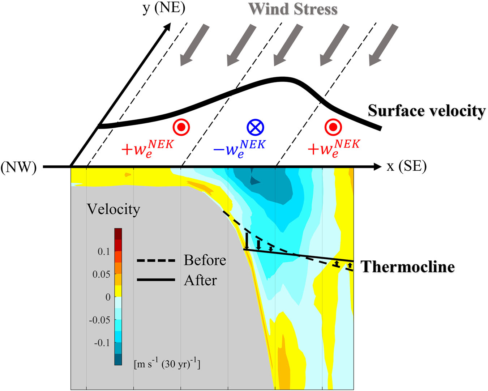
图6｜黑潮通过非线性埃克曼抽吸响应东亚冬季风增强的示意图。
Fig. 6 | A schematic illustration of the Kuroshio response to the EAWM strengthening through nonlinear Ekman pumping.
增强的逆黑潮流向风应力通过非线性埃克曼抽吸，在黑潮核心引起下沉、在其两侧引起上升。
Enhanced counter-Kuroshio wind stress induces downwelling over the Kuroshio core and upwelling along its flanks through nonlinear Ekman pumping.
这些垂向运动减小了黑潮离岸深水侧横跨黑潮的温跃层坡度，导致洋流减弱。
These vertical motions reduce the thermocline slope across the Kuroshio on its offshore deep side, leading to a weakening of the current.
值得注意的是，以往许多研究认为，在未来预估中，全球变暖背景下的海洋增温可能增强黑潮[26–29]；然而，我们的结果表明，在持续全球变暖期间，这种增强在很大程度上并未出现在黑潮区域本身，而是通过正压过程表现为大陆架环流的增强（图3a、b）。
It is worth noting that many previous studies have suggested that ocean warming under global warming could intensify the Kuroshio in future projections[26–29], however, our results indicate that such intensification largely escapes the Kuroshio region itself and is instead manifested in enhanced continental-shelf circulations through barotropic processes during ongoing global warming (Fig. 3a, b).
现场观测确实显示，对马暖流的体积输运量呈现稳健的增强趋势[66,67]，这可能与上述现象有关。
In-situ observations indeed exhibit a robust strengthening trend in the volume transport of the Tsushima Warm Current[66,67], which may be related to this phenomenon.
此外，与Nakamura等[43]提出的机制一致，非线性也有助于秋冬季黑潮近岸侧的增强（图4f）；这一机制或有助于解释，为何东海（ECS）大陆架环流的增强在秋冬季比春夏季更为明显（图3a、b）。
Furthermore, consistent with the mechanism proposed by Nakamura et al.[43], nonlinear also contribute to the intensification of the Kuroshio on its onshore side during autumn−winter (Fig. 4f); this mechanism may help explain the more pronounced enhancement of circulation over the ECS continental shelf in autumn–winter compared with spring–summer (Fig. 3a, b).
鉴于这些发现，未来研究需要更加重视局地强迫在西边界流未来演变中的作用，并利用现有观测数据集研究其他西边界流的长期趋势。
In light of these findings, future studies are needed to place greater emphasis on the role of local forcing in the future evolution of western boundary currents, and to investigate long-term trends in other western boundary currents using available observational datasets.
方法
Methods
数据
Data
我们采用基于多任务卫星测高的“全球海洋网格化L4海面高度及衍生变量再处理产品（1993年至今）”（Global Ocean Gridded L4 Sea Surface Heights and Derived Variables Reprocessed 1993 Ongoing；https://doi.org/10.48670/moi-00148），考察黑潮区域表层地转流速（SGV）的长期趋势。
The product Global Ocean Gridded L4 Sea Surface Heights and Derived Variables Reprocessed 1993 Ongoing (https://doi.org/10.48670/moi-00148), which is based on multi-mission satellite altimetry, was used to examine the long-term trend in SGV over the Kuroshio.
该数据集由哥白尼海洋环境监测服务（CMEMS）发布，提供水平分辨率为1/8°的逐日海面高度（SSH）和表层地转流速。
This dataset, distributed by the Copernicus Marine Environment Monitoring Service (CMEMS), provides daily SSH and surface geostrophic velocity at a 1/8° horizontal resolution.
此外，我们使用了两套高分辨率（1/12°）再分析数据集：日本海洋研究开发机构提供的日本近海海洋可预报性试验（JCOPE2M）[68,69]，以及CMEMS提供的全球海洋物理再分析（GLORYS）[70]。
In addition, we used two high-resolution (1/12°) reanalysis datasets: the Japan Coastal Ocean Predictability Experiment (JCOPE2M)[68,69] provided by the Japan Agency for Marine-Earth Science and Technology, and the Global Ocean Physics Reanalysis (GLORYS)[70] provided by CMEMS.
JCOPE2M和GLORYS均同化了卫星测高观测。
Both JCOPE2M and GLORYS assimilate satellite altimetry observations.
JCOPE2M在47层sigma垂向坐标（0–6500 m）上提供西北太平洋（108–180°E、10.5–62°N）的三维流速、盐度和位温，而GLORYS在全球范围的50个垂向层（0–5300 m）上提供相同变量。
JCOPE2M offers three-dimensional velocity, salinity, and potential temperature on a 47-sigma-level vertical coordinate (0–6500 m) for the western North Pacific (108–180°E, 10.5–62°N), whereas GLORYS provides the same variables globally on 50 vertical levels (0–5300 m).
为进一步厘清大气强迫的影响，我们使用了欧洲中期天气预报中心第五代再分析（ERA5）[71]中的风应力、10 m风速、海表温度（SST）和海平面气压（SLP）。
To further clarify the effects of atmospheric forcing, we used wind stress, 10-m wind speed, SST, and SLP from the fifth-generation reanalysis of the European Centre for Medium-Range Weather Forecasts (ERA5)[71].
ERA5提供水平分辨率为1/4°的全球数据。
ERA5 provides global data at a 1/4° horizontal resolution.
上述所有数据集均转换为1993年4月至2023年3月期间的月平均值，用于研究过去30年黑潮强度的变化趋势。
All datasets described above were converted to monthly means for the period from April 1993 to March 2023 and used to investigate the trend in the strength of the Kuroshio over the past 30 years.
斜压罗斯贝波模型的应用
Application of baroclinic Rossby wave model
为考察海盆尺度风强迫和海洋层结对黑潮的影响，我们采用线性化的1.5层约化重力模型重现北太平洋SSH趋势，
To examine the effects of basin-scale wind forcing and ocean stratification on the Kuroshio, we reproduced the North Pacific SSH trend using a linearized 1.5-layer reduced-gravity model,
∂η/∂t − cR ∂η/∂x = −g′/(ρ₀gf) curl τ， （1）
∂η/∂t − cR ∂η/∂x = −g′/(ρ₀gf) curl τ, (1)
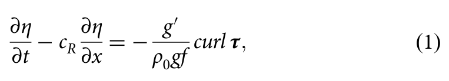
其中，η为SSH，cR为斜压罗斯贝波传播速度，g′为约化重力，τ为风应力矢量，ρ₀为参考海水密度（1025 kg m⁻³），g为重力加速度，f为科里奥利参数，x为纬向坐标（向东为正），t表示时间。
where η is SSH, cR is the baroclinic Rossby wave propagation speed, g′ is the reduced gravity, τ is the wind stress vector, ρ₀ is the reference seawater density (1025 kg m⁻³), g is the gravitational acceleration, f is the Coriolis parameter, x is the zonal coordinate (positive eastward), and t denotes time.
将式（1）从东边界xₑ沿斜压罗斯贝波特征线积分，可得
By integrating Eq. (1) along the baroclinic Rossby wave characteristic from the eastern boundary xₑ, we obtain
η(x, y, t) = {∫[xₑ→x] g′(t + (x − x′)/c_R) curl τ(x′, y, t + (x − x′)/c_R) dx′}/(ρ₀gfc_R) + η(xₑ, y, t + (x − xₑ)/c_R)， （2）
η(x, y, t) = {∫[xₑ→x] g′(t + (x − x′)/c_R) curl τ(x′, y, t + (x − x′)/c_R) dx′}/(ρ₀gfc_R) + η(xₑ, y, t + (x − xₑ)/c_R), (2)
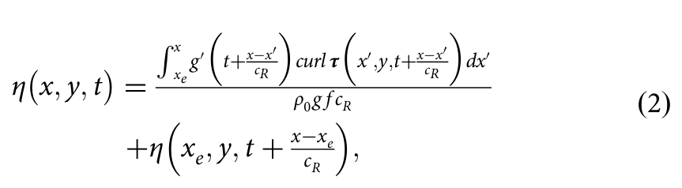
其中，y为经向坐标（向北为正）。
where y is the meridional coordinate (positive northward).
于是，SSH趋势可表示为
The SSH trend can then be expressed as
⟨η(x, y)⟩_trd = g̅′/(ρ₀gfc_R) ∫[xₑ→x] ⟨curl τ(x′, y)⟩_trd dx′ + ⟨g′⟩_trd/(ρ₀gfc_R) ∫[xₑ→x] overline(curl τ(x′, y)) dx′ + ⟨ηₑ(y)⟩_trd。 （3）
⟨η(x, y)⟩_trd = g̅′/(ρ₀gfc_R) ∫[xₑ→x] ⟨curl τ(x′, y)⟩_trd dx′ + ⟨g′⟩_trd/(ρ₀gfc_R) ∫[xₑ→x] overline(curl τ(x′, y)) dx′ + ⟨ηₑ(y)⟩_trd. (3)
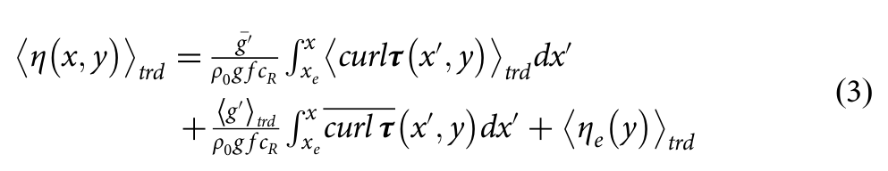
其中，⟨·⟩trd表示时间趋势，·表示时间平均。
where ⟨·⟩trd denotes the temporal trend and · the temporal mean.
式（3）右侧三项分别量化风应力旋度（WSC）、由g′表征的海洋层结以及东边界SSH对北太平洋SSH趋势的贡献。
The three terms on the right-hand side of Eq. (3) quantify the respective contributions of the WSC, ocean stratification represented by g′, and the eastern boundary SSH to the North Pacific SSH trend.
约化重力定义为
The reduced gravity is defined as
g′ = g(ρ₂ − ρ₁)/ρ₀， （4）
g′ = g(ρ₂ − ρ₁)/ρ₀, (4)
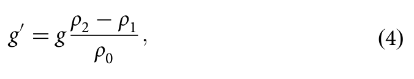
ρ₁表示上层密度，通过将GLORYS中454 m（H₁）以上的密度在北太平洋范围内取平均确定；注意，ρ₁随时间变化，但在空间上保持均匀。
ρ₁ denotes the upper-layer density, determined from GLORYS by averaging the density above 454 m (H₁) over the North Pacific; note that ρ₁ varies temporally while remaining spatially homogeneous.
H₁大致对应于北太平洋副热带海域主温跃层的深度。
H₁ approximately corresponds to the depth of the main thermocline in the subtropical North Pacific.
ρ₂表示下层密度，根据GLORYS将其设定为1027.6 kg m⁻³。
ρ₂ denotes the lower-layer density and is prescribed as 1027.6 kg m⁻³ according to GLORYS.
斜压罗斯贝波速度cR由下式给出：
The baroclinic Rossby wave speed cR is given by the following equation:
cR = βg′H₁/f²， （5）
cR = βg′H₁/f², (5)
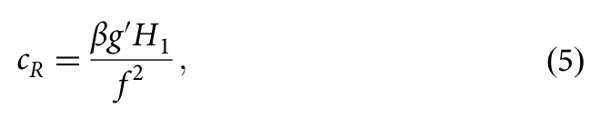
其中，β为科里奥利参数f的经向梯度。
where β is the meridional gradient of the Coriolis parameter f.
观测到的SSH异常向西传播速度通常快于理论斜压罗斯贝波速度cR，最高可达约2倍cR[72–75]。
Observed westward propagation speeds of SSH anomalies are generally faster than the theoretical baroclinic Rossby wave speed cR, and can reach up to approximately twice cR[72–75].
这主要是由于斜压纬向平均流的存在改变了位涡梯度[73]。
This is mainly caused by the presence of baroclinic zonal mean flows, which modify the potential vorticity gradient[73].
为消除这一差异，我们假定g′ = 0.03 m s⁻²，其值约为北太平洋副热带海域平均g′值的1.5倍，且这一假定仅用于估算cR。
To resolve this discrepancy, we assume g′ = 0.03 m s⁻² which is approximately 1.5 times the value of g′ averaged over the subtropical North Pacific, solely for the purpose of estimating cR.
利用这一假定由式（5）得到的cR值，更接近Chelton和Schlax[72]给出的观测传播速度。
This assumption yields a value of cR from Eq. (5) that is closer to the observed propagation speed shown in Chelton and Schlax[72].
横断面地转流速的分解
Decomposition of cross-sectional geostrophic velocity
沿黑潮方向的地转流速V可表示为，
The geostrophic velocity along the Kuroshio, V, can be expressed as,
V(X, −d) = g/(ρ₀f) ∫[−d→0] (∂ρ/∂X) dz + g/f ∂η/∂X， （6）
V(X, −d) = g/(ρ₀f) ∫[−d→0] (∂ρ/∂X) dz + g/f ∂η/∂X, (6)
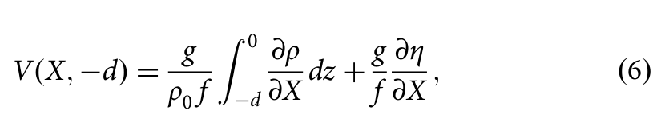
其中，X表示横穿黑潮的断面上的水平位置，d为深度，z为垂向坐标，ρ为海水密度。
where X denotes the horizontal position along a section crossing the Kuroshio, d is the depth, z is the vertical coordinate, and ρ is the seawater density.
SSH变化可分解为密度变化的贡献（比容分量，ηₛ），以及与海底压力有关的局地海洋质量变化的贡献（质量分量，ηₘ）[76,77]：
Changes in SSH can be decomposed into contributions from density variations (the steric component, ηₛ) and changes in local ocean mass associated with bottom pressure (the mass component, ηₘ)[76,77]:
⟨η⟩_trd = ⟨ηₛ⟩_trd + ⟨ηₘ⟩_trd = −1/ρ₀ ∫[−D→0] ⟨ρ⟩_trd dz + ⟨ηₘ⟩_trd， （7）
⟨η⟩_trd = ⟨ηₛ⟩_trd + ⟨ηₘ⟩_trd = −1/ρ₀ ∫[−D→0] ⟨ρ⟩_trd dz + ⟨ηₘ⟩_trd, (7)
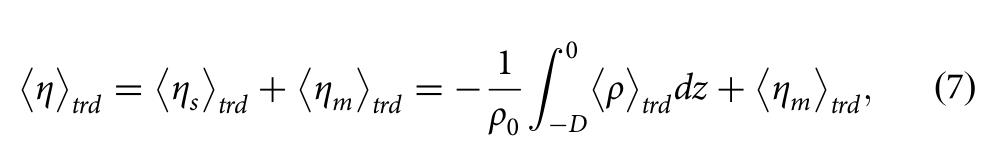
其中，D为局地海底深度。
where D is the local bottom depth.
将式（7）代入式（6），地转流速的趋势可写为
Substituting Eq. (7) into Eq. (6), the trend in geostrophic velocity can be written as
⟨V(X, −d)⟩_trd = −g/(ρ₀f) ∫[−D→−d] (∂⟨ρ⟩_trd/∂X) dz − g/(ρ₀f) ⟨ρ(X, −D)⟩_trd ∂D/∂X + g/f ∂⟨ηₘ⟩_trd/∂X。 （8）
⟨V(X, −d)⟩_trd = −g/(ρ₀f) ∫[−D→−d] (∂⟨ρ⟩_trd/∂X) dz − g/(ρ₀f) ⟨ρ(X, −D)⟩_trd ∂D/∂X + g/f ∂⟨ηₘ⟩_trd/∂X. (8)
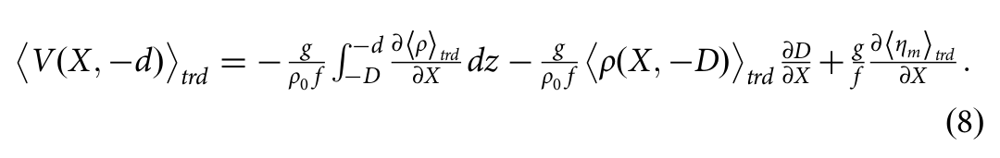
式（8）右侧三项分别表示斜压项、海底密度变化与地形梯度之间的相互作用，以及正压项。
The three terms on the right-hand side of Eq. (8) represent the baroclinic term, the interaction between bottom density changes and topographic gradients, and the barotropic term, respectively.
局地风强迫影响急流流速的理论
Theory for the effect of local wind forcing on jet current speed
Nakamura等[44]在顺流坐标系中推导了急流下方埃克曼抽吸速度（wₑ）的表达式（该文式6）。
Nakamura et al.[44] derived an expression for the Ekman pumping velocity (wₑ) beneath a jet in a streamwise coordinate system (their Eq. 6).
为便于进行空间映射，我们将wₑ用笛卡尔坐标表示为
To facilitate spatial mapping, we express wₑ in Cartesian coordinates as
wₑ = (1/(ρ₀f̂)) curl τ − (1/(ρ₀f̂²))(τₓ ∂²u/∂y² + τy ∂²v/∂x²) − (ρₐCD/(ρ₀f̂)) ζW， （9）
wₑ = (1/(ρ₀f̂)) curl τ − (1/(ρ₀f̂²))(τₓ ∂²u/∂y² + τy ∂²v/∂x²) − (ρₐCD/(ρ₀f̂)) ζW, (9)
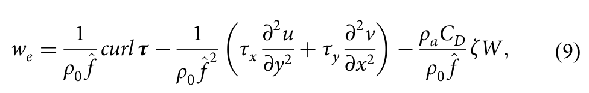
其中，τₓ和τy分别为风应力τ的纬向和经向分量。
where τₓ and τy are the zonal and meridional components of wind stress τ, respectively.
u和v表示表层流速的纬向和经向分量，W为10 m风速，ρₐ = 1.25 kg m⁻³为空气密度，CD = 1.2 × 10⁻³为拖曳系数，ζ = ∇ × (u, v)为表层涡度，f̂ = f + ζ为有效科里奥利参数[38]。
u and v denote the zonal and meridional components of the surface velocity, W is the 10-m wind speed, ρₐ = 1.25 kg m⁻³ is air density, CD = 1.2 × 10⁻³ is the drag coefficient, ζ = ∇ × (u, v) is the surface vorticity, and f̂ = f + ζ is the effective Coriolis parameter[38].
式（9）右侧三项分别表示风应力旋度引起的埃克曼抽吸（weWSC）、非线性埃克曼抽吸（weNEK）和相对风效应（weRW）。
The three terms on the right-hand side of Eq. (9) represent Ekman pumping induced by wind stress curl (weWSC), nonlinear Ekman pumping (weNEK), and the relative-wind effect (weRW), respectively.
有关这些动力过程的更多讨论见Nakamura等[44]。
More discussions regarding these dynamical processes can be found in Nakamura et al.[44].
为估算风强迫引起的wₑ趋势，将表层流速和ζ视为时间平均场，可得
To estimate wind-forced trends in wₑ, the surface velocity and ζ are treated as temporally averaged fields, yielding
⟨wₑ⟩_trd = (1/ρ₀) f̂ ⟨curl τ⟩_trd − (1/ρ₀) f̂² ⟨τₓ ∂²u̅/∂y² + τy ∂²v̅/∂x²⟩_trd − (ρₐCD/ρ₀) f̂ ζ̅ ⟨W⟩_trd。 （10）
⟨wₑ⟩_trd = (1/ρ₀) f̂ ⟨curl τ⟩_trd − (1/ρ₀) f̂² ⟨τₓ ∂²u̅/∂y² + τy ∂²v̅/∂x²⟩_trd − (ρₐCD/ρ₀) f̂ ζ̅ ⟨W⟩_trd. (10)
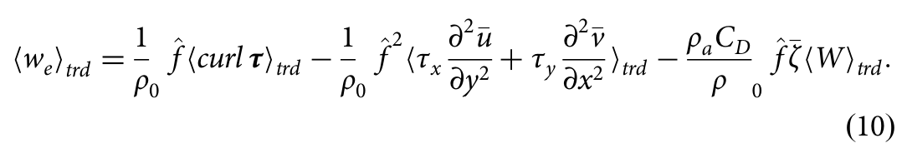
注意，表层流速和ζ是根据JCOPE2M的1 m深度流速估算，而不是根据卫星观测的SGV估算；前者能够以更高分辨率表征近表层海流。
Note that, rather than satellite-observed SGV, the surface velocity and ζ are estimated from the 1-m depth velocity of JCOPE2M, which provides a higher-resolution representation of near-surface currents.
参照Zhang等[46]，采用线性化的1.5层位涡框架描述上层厚度（h₁）对埃克曼抽吸的响应：
Following Zhang et al.[46], the response of the upper-layer thickness (h₁) to Ekman pumping is described using a linearized 1.5-layer potential vorticity framework:
Rₑ² ∂²h₁/∂X² − h₁ = wₑT， （11）
Rₑ² ∂²h₁/∂X² − h₁ = wₑT, (11)
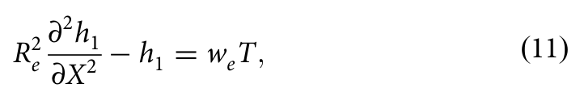
其中，Rₑ = √(g′H¹)/f为斜压罗斯贝变形半径，H¹为平均上层厚度，T为强迫时间尺度。
where Rₑ = √(g′H¹)/f is the baroclinic Rossby deformation radius, H¹ is the mean upper-layer thickness, and T is the forcing timescale.
根据JCOPE2M，我们将黑潮区域的H¹取为500 m，由此得到g′ ≈ 0.024 m s⁻²和Rₑ ≈ 50 km。
Based on JCOPE2M, we take H¹ = 500 m over the Kuroshio, yielding g′ ≈ 0.024 m s⁻² and Rₑ ≈ 50 km.
将T设为6个月，代表系统在秋冬季受风驱动的时段。
T is set to 6 months, representing the period during which the system is driven by winds in autumn–winter.
这里，Rₑ² ∂²h₁/∂X²和−h₁分别表示上层对wₑ的与涡度有关及与厚度有关的响应。
Here, Rₑ² ∂²h₁/∂X² and −h₁ represent the vorticity-related and thickness-related responses of the upper layer to wₑ, respectively.
该控制方程是线性的，通过对水平坐标X进行傅里叶变换求解。
The governing equation is linear and is solved by applying a Fourier transform in the horizontal coordinate X.
在谱空间中，空间导数转换为波数k的代数函数，从而得到厚度响应的显式亥姆霍兹型解。
In spectral space, spatial derivatives are converted into algebraic functions of the wavenumber k, yielding an explicit Helmholtz-type solution for the thickness response.
为清晰起见，采用连续傅里叶表示来表达该解，并规定变换约定为∂/∂X → ik。
For clarity, the solution is expressed using a continuous Fourier representation, with the transform convention defined such that ∂/∂X → ik.
随后通过逆傅里叶变换得到物理空间中的解：
The physical-space solution is then obtained by an inverse Fourier transform:
h₁(X) = −T ∫ [ŵₑ(k)/(1 + Rₑ²k²)] e^(ikX) dk。 （12）
h₁(X) = −T ∫ [ŵₑ(k)/(1 + Rₑ²k²)] e^(ikX) dk. (12)
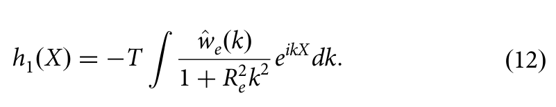
相应的地转流速由厚度梯度估算为
The associated geostrophic velocity is estimated from the thickness gradient as
V(X) = (g′/f) ∂h₁/∂X = −(g′T/f) ∫ [ikŵₑ(k)/(1 + Rₑ²k²)] e^(ikX) dk。 （13）
V(X) = (g′/f) ∂h₁/∂X = −(g′T/f) ∫ [ikŵₑ(k)/(1 + Rₑ²k²)] e^(ikX) dk. (13)
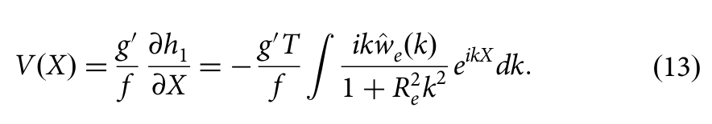
统计分析
Statistical analysis
统计分析使用MATLAB（R2024b）进行。
Statistical analyses were performed using MATLAB (R2024b).
采用MATLAB函数regress实现的普通最小二乘回归估计线性趋势。
Linear trends were estimated using ordinary least squares regression implemented with the MATLAB function regress.
采用双侧t检验评估回归系数的统计显著性。
Statistical significance of the regression coefficients was evaluated using a two-sided t-test.
样本量（N = 30）对应于每次回归分析所用的独立年度值的数量。
The sample size (N = 30) corresponds to the number of independent annual values used in each regression analysis.
P < 0.1的结果被视为具有统计显著性，并在图中标出。
Results with P < 0.1 were considered statistically significant and are indicated in the figures.
数据可用性
Data availability
数据可通过以下链接获取：全球海洋网格化L4海面高度及衍生变量再处理产品（1993年至今）（Global Ocean Gridded L4 Sea Surface Heights and Derived Variables Reprocessed 1993 Ongoing；https://doi.org/10.48670/moi-00148）、JCOPE2M（https://www.jamstec.go.jp/jcope/htdocs/distribution/）、GLORYS（https://data.marine.copernicus.eu/product/GLOBAL_MULTIYEAR_PHY_001_030/description）、ERA5（https://cds.climate.copernicus.eu/datasets/reanalysis-era5-single-levels-monthly-means?tab=overview）。
The data are available in the following links: Global Ocean Gridded L4 Sea Surface Heights and Derived Variables Reprocessed 1993 Ongoing (https://doi.org/10.48670/moi-00148), JCOPE2M (https://www.jamstec.go.jp/jcope/htdocs/distribution/), GLORYS (https://data.marine.copernicus.eu/product/GLOBAL_MULTIYEAR_PHY_001_030/description), ERA5 (https://cds.climate.copernicus.eu/datasets/reanalysis-era5-single-levels-monthly-means?tab=overview).
所有数据均可在正文或补充材料中获取。
All data are available in the main text or the supplementary materials.
致谢
Acknowledgements
不适用。
Not applicable.
作者贡献
Author contributions
资助
Funding
本研究获KAKENHI 22K03714、24H02221资助。
This study was supported by KAKENHI 22K03714, 24H02221.
利益冲突
Competing interests
作者声明不存在利益冲突。
The authors declare no competing interests.
附加信息
Additional information
补充信息
Supplementary information
在线版本包含补充材料，可通过https://doi.org/10.1038/s41612-026-01543-0获取。
The online version contains supplementary material available at https://doi.org/10.1038/s41612-026-01543-0.
通信及材料请求应发送给Yu-Xiang Qiao。
Correspondence and requests for materials should be addressed to Yu-Xiang Qiao.
重印本及许可信息见http://www.nature.com/reprints
Reprints and permissions information is available at http://www.nature.com/reprints
出版商说明
Publisher’s note
Springer Nature对已发表地图和机构隶属信息中的管辖权主张保持中立。
Springer Nature remains neutral with regard to jurisdictional claims in published maps and institutional affiliations.
开放获取
Open Access
本文采用知识共享署名4.0国际许可协议授权；该协议允许以任何媒介或格式使用、共享、改编、分发和复制本文，前提是恰当署名原作者及来源、提供知识共享许可协议的链接，并注明是否作出了修改。
This article is licensed under a Creative Commons Attribution 4.0 International License, which permits use, sharing, adaptation, distribution and reproduction in any medium or format, as long as you give appropriate credit to the original author(s) and the source, provide a link to the Creative Commons licence, and indicate if changes were made.
本文中的图像或其他第三方材料包含在本文的知识共享许可范围内，除非该材料的署名说明另有注明。
The images or other third party material in this article are included in the article's Creative Commons licence, unless indicated otherwise in a credit line to the material.
如果某材料不包含在本文的知识共享许可范围内，且您拟议的用途不为法律规定所允许或超出允许的使用范围，则需要直接向著作权持有人取得许可。
If material is not included in the article's Creative Commons licence and your intended use is not permitted by statutory regulation or exceeds the permitted use, you will need to obtain permission directly from the copyright holder.
如需查看该许可协议，请访问http://creativecommons.org/licenses/by/4.0/。
To view a copy of this licence, visit http://creativecommons.org/licenses/by/4.0/.
这篇待正式出版文章（Article in Press）提前发布，以便您更快获取新的研究成果。
This Article in Press is shared early to give you faster access to new research.
该文章可供引用，并拥有永久DOI。
It is citable and carries a permanent DOI.
最终编辑版本将自动取代此版本。
The final edited version will replace it automatically.
补充材料 Supplementary Information
以下论文的补充信息
Supplementary Information for
持续气候变暖背景下东亚冬季风驱动的黑潮减弱观测证据
Observed Weakening of the Kuroshio Driven by the East Asian Winter Monsoon under Ongoing Climate Warming
本文件内容
Contents of the file
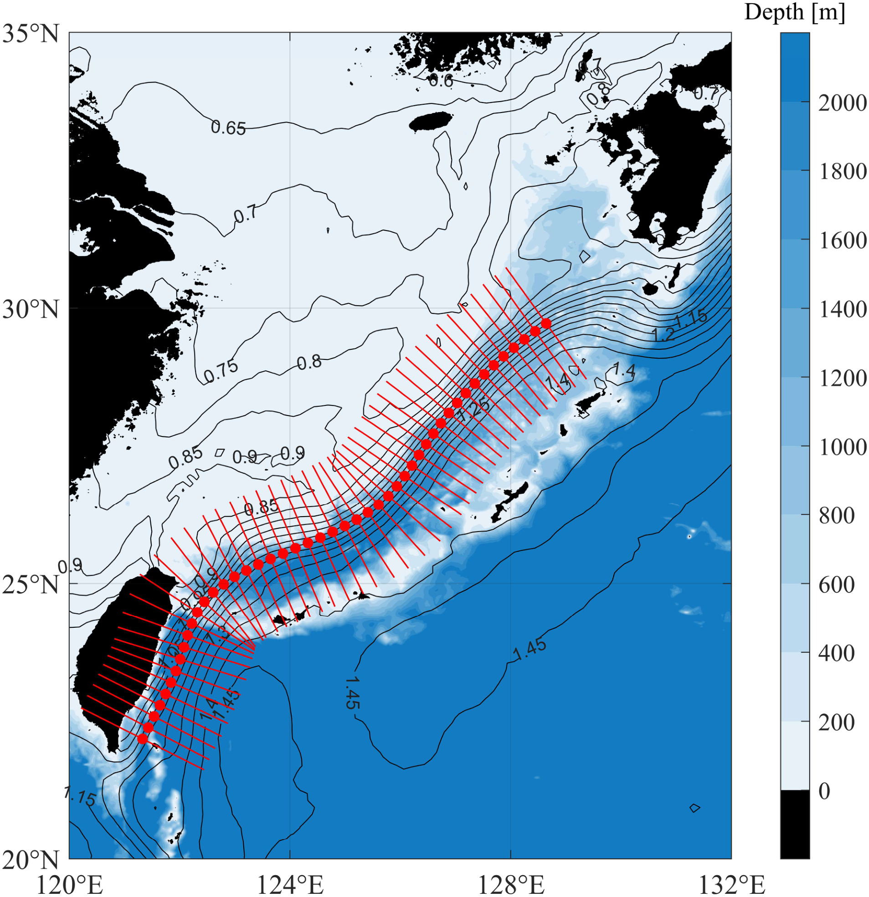
补充图 1. 从 ETW 到 ECS 沿黑潮流轴坐标分布的横断面。
Supplementary Fig. 1. Cross-sections along the Kuroshio stream coordinate from ETW to the ECS.
红线表示用于计算沿黑潮流轴坐标的断面平均表层地转流速（SGV）的断面。
Red lines denote the sections used to compute the cross-sectionally averaged SGV along the Kuroshio stream coordinate.
黑色等值线表示气候态平均海表高度（SSH）。
Black contours indicate the climatological mean SSH.
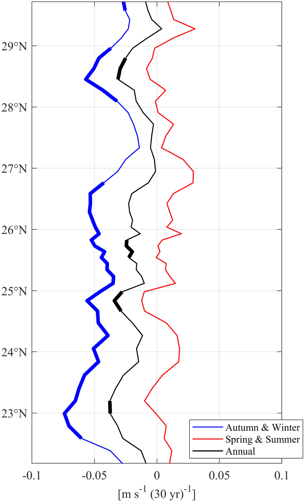
补充图 2. 沿黑潮流轴坐标的断面平均 SGV 趋势。
Supplementary Fig. 2. Trends in cross-sectionally averaged SGV along the Kuroshio stream coordinate.
黑线表示年平均断面 SGV 的趋势。
Black line denotes trends in the annually averaged cross-sectional SGV.
蓝线和红线与黑线含义相同，但分别对应秋冬季和春夏季的平均值。
Blue and red lines are the same as the black line, but for those averaged in autumn–winter and spring–summer, respectively.
在 90% 置信水平上显著的趋势以粗线表示。
Trends significant at the 90% confidence level are shown by the thick lines.
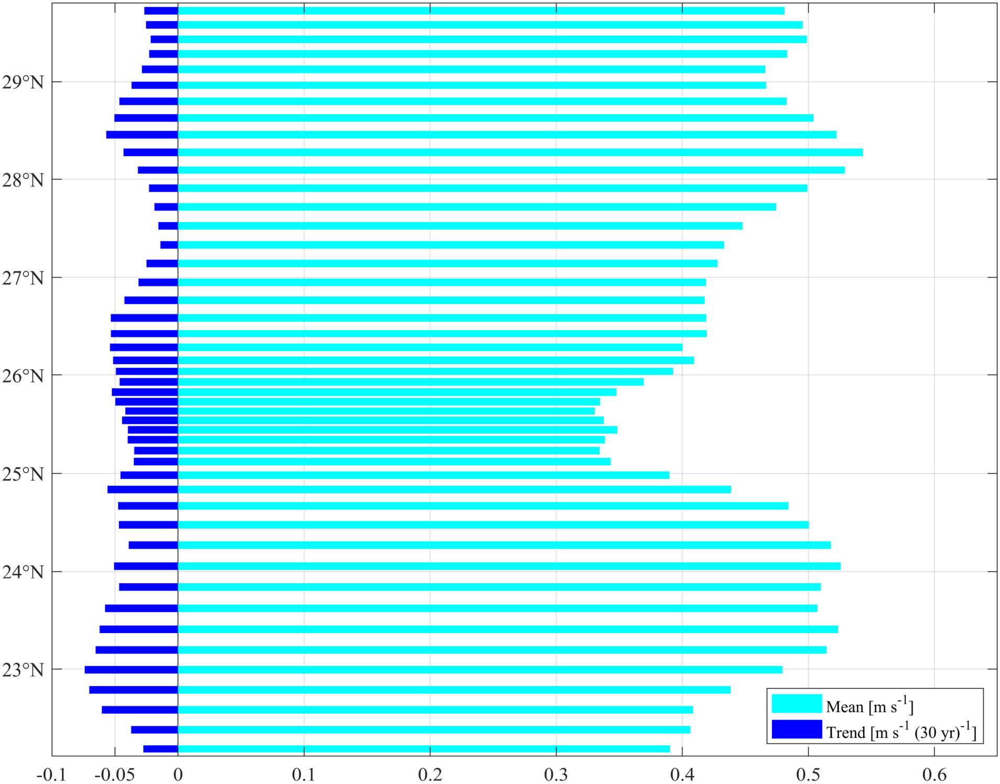
补充图 3. 秋冬季沿黑潮流轴坐标的断面平均 SGV 的均值和趋势。
Supplementary Fig. 3. Mean and trends of cross-sectionally averaged SGV along the Kuroshio stream coordinate in autumn−winter.
趋势与相应均值之比的平均值为 10 ± 4%。
The mean ratio of the trends to the corresponding mean values is 10 ± 4%.
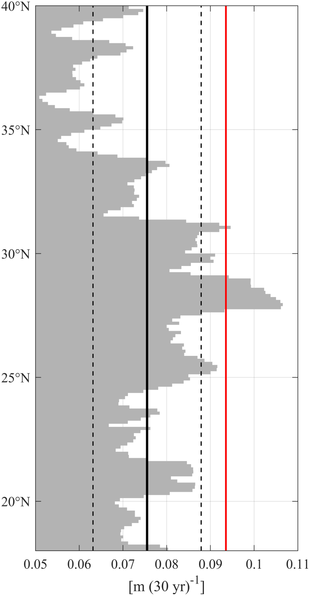
补充图 4. 北太平洋副热带东边界 SSH 趋势与全球平均 SSH 趋势的比较。
Supplementary Fig. 4. Comparison of subtropical eastern boundary SSH trends in the North Pacific with the global-mean SSH trend.
灰色柱表示北太平洋副热带东边界的 SSH 趋势。
Gray bars denote the subtropical eastern boundary SSH trends in the North Pacific.
相应均值以黑色实线表示，均值 ± 标准差以黑色虚线表示。
The corresponding mean value is indicated by the solid black line, while the mean ± standard deviation is indicated by the dashed black lines.
红线表示全球平均 SSH 趋势。
The global-mean SSH trend is shown by the red line.
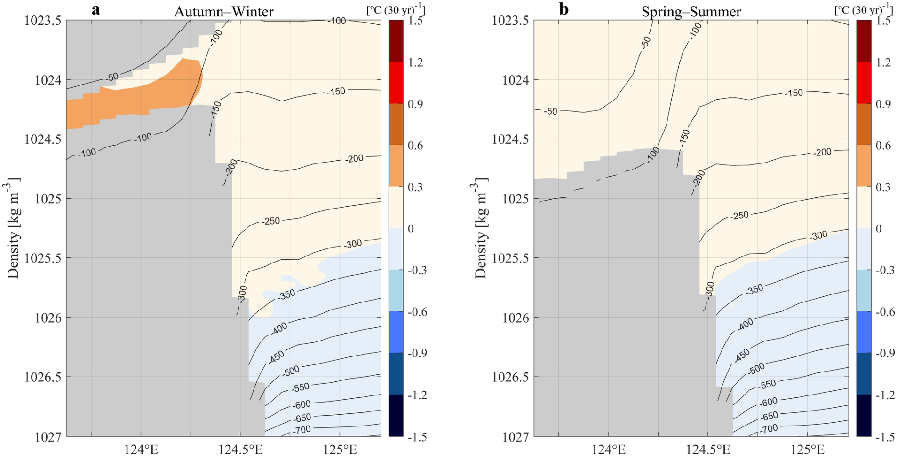
补充图 5. 基于 JCOPE2M 的过去三十年温度趋势的垂向结构，在黑潮区域该趋势主要受平流过程支配。
Supplementary Fig. 5. Vertical structures of temperature trends over the past three decades based on JCOPE2M, dominated by advective processes in the Kuroshio region.
颜色表示等密度坐标下（a）秋冬季和（b）春夏季的温度趋势。
Colors denote temperature trends on isopycnal coordinates for (a) autumn–winter and (b) spring–summer.
等值线表示相应季节等密度面的气候态平均深度。
Contours indicate the climatological mean depth of isopycnal surface for the corresponding season.
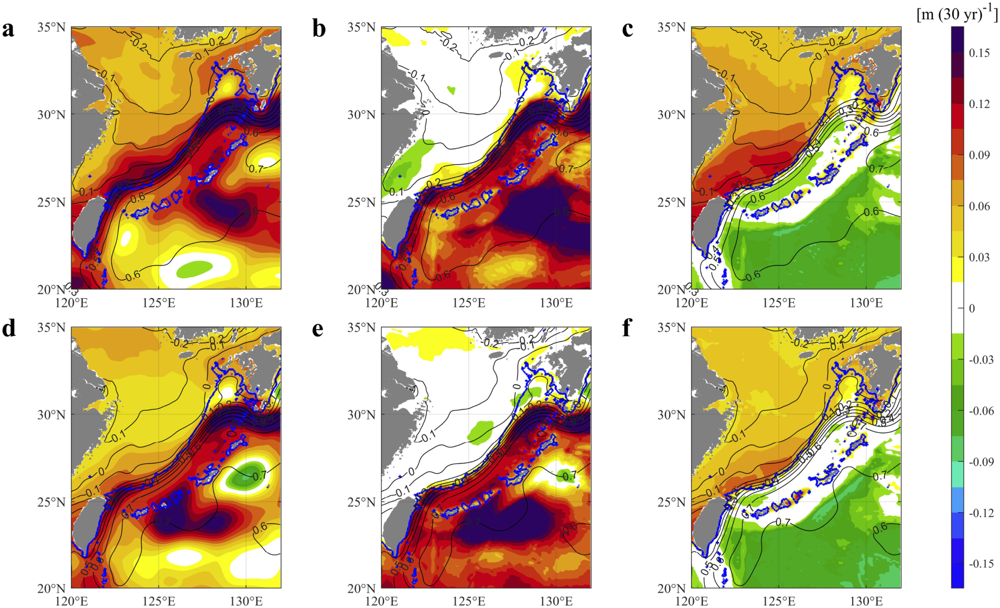
补充图 6. 基于 JCOPE2M 的过去三十年 SSH 及其各分量的趋势。
Supplementary Fig. 6. Trends in SSH and its components over the past three decades based on JCOPE2M.
（a–c）秋冬季（a）总 SSH（η）、（b）比容 SSH（ηₛ）和（c）与局地海洋质量有关的 SSH（ηₘ）的趋势。
(a–c) Trends in (a) total SSH (η), (b) steric SSH (ηₛ) and (c) SSH related to local ocean mass (ηₘ) during autumn–winter.
ηₘ 估算为 η 与 ηₛ 之差，即 ηₘ= η−ηₛ。
ηₘ is estimated as the difference between η and ηₛ, such that ηₘ= η−ηₛ.
（d–f）与（a–c）相同，但对应春夏季。
(d–f) Same as (a–c), but for spring–summer.
等值线表示相应季节的气候态 η。
Contours denote the climatological η for the corresponding season.
蓝线表示 200 m 等深线。
Blue line denotes the 200-m isobath.
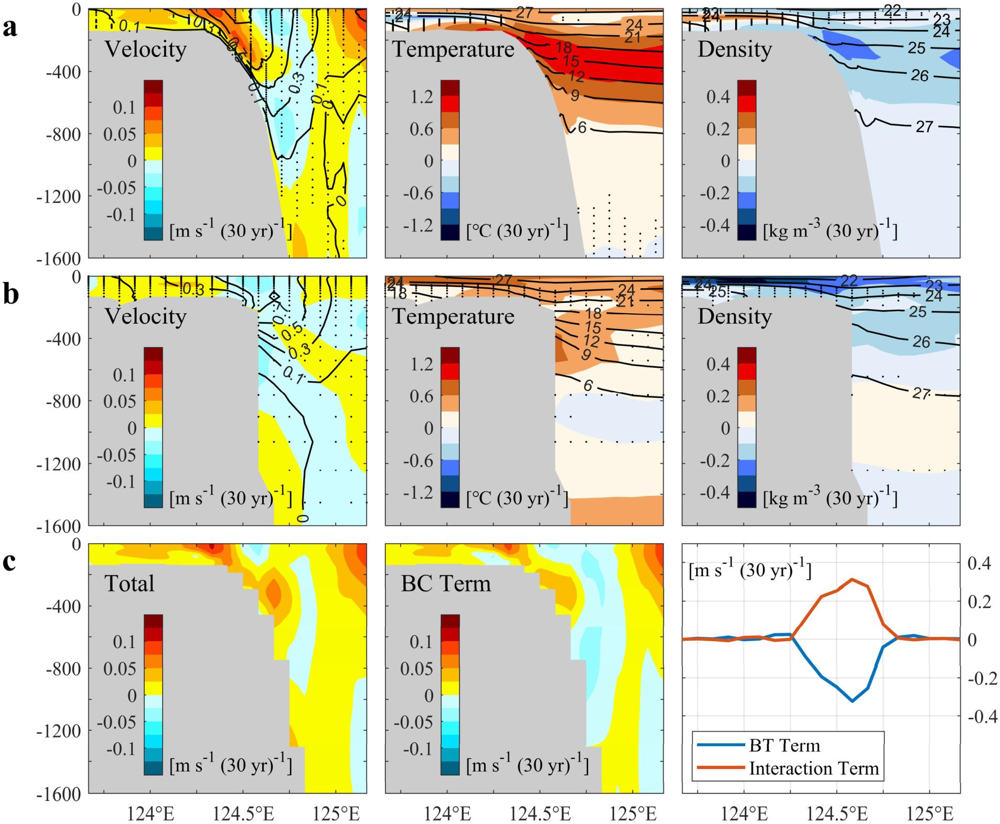
补充图 7. 过去三十年春夏季黑潮趋势的垂向结构。
Supplementary Fig. 7. Vertical structures of the Kuroshio trends in spring–summer over the past three decades.
（a, b）基于（a）JCOPE2M 和（b）GLORYS 的春夏季断面流速（左）、温度（中）及密度（右；σₜ）趋势的垂向结构；断面位置见图 3 的 a 和 b。
(a, b) Vertical structures of the trends in cross-sectional velocity (left), temperature (middle), and density (right; σₜ) during spring–summer, based on (a) JCOPE2M and (b) GLORYS; the cross-section location is indicated in Fig.3, a and b.
点状标记区域表示趋势在 90% 置信水平上不显著的区域。
Stippled areas indicate regions where trends are insignificant at the 90% confidence level.
等值线表示相应变量的气候态均值。
Contours denote the climatological mean for the corresponding variables.
（c）利用 JCOPE2M，根据“方法”部分的式（8），对春夏季断面地转流速进行分解。
(c) Decomposition of the cross-sectional geostrophic velocity for spring–summer based on Eq. (8) in Methods using JCOPE2M.
总项（左）等于斜压项（中）、正压项（右）和底部密度–地形相互作用项（右）之和。
The total term (left) equals the sum of the baroclinic (middle), barotropic (right), and bottom-density–topography interaction (right) terms.
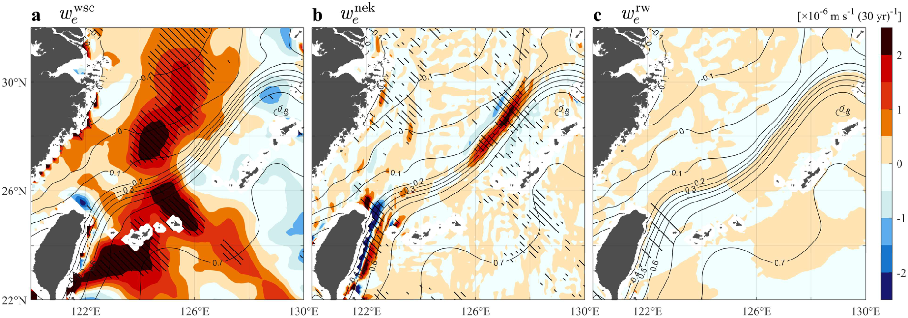
补充图 8. 过去三十年春夏季埃克曼抽吸引起的垂向速度趋势。
Supplementary Fig. 8. Ekman-pumping-induced vertical velocity trends in spring–summer over the past three decades.
春夏季局地风强迫通过（a）与风应力旋度（WSC）有关的埃克曼抽吸（weWSC）、（b）非线性埃克曼抽吸（weNEK）和（c）相对风埃克曼抽吸（weRW）引起的垂向速度趋势，根据“方法”部分的式（10）计算。
Trends in vertical velocity during spring–summer induced by local wind forcing through (a) WSC-related Ekman pumping (weWSC), (b) nonlinear Ekman pumping (weNEK), and (c) relative-wind Ekman pumping (weRW), calculated from Eq. (10) in Methods.
等值线表示由 JCOPE2M 得到的秋冬季气候态平均 SSH。
Contours denote the climatological mean SSH during autumn–winter derived from JCOPE2M.
阴影线区域表示趋势超过 90% 置信水平的区域。
Hatched areas indicate regions where trends exceed the 90% confidence level.